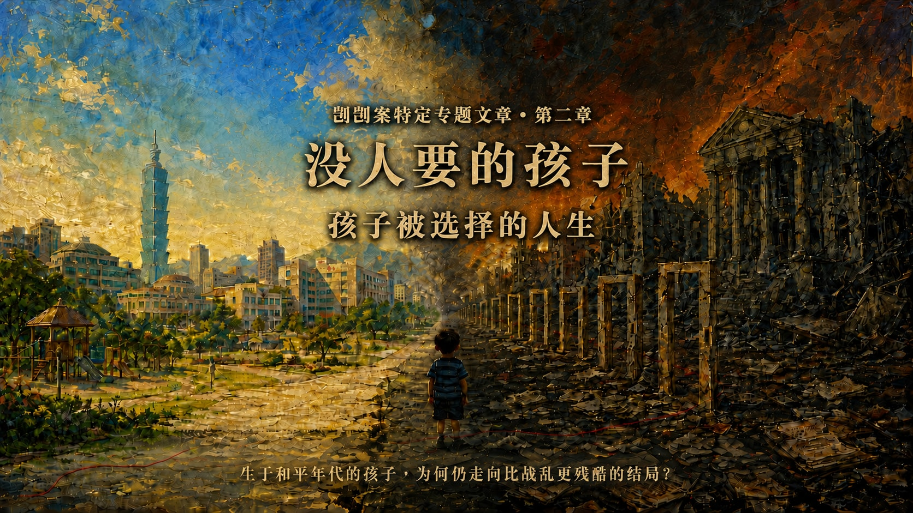
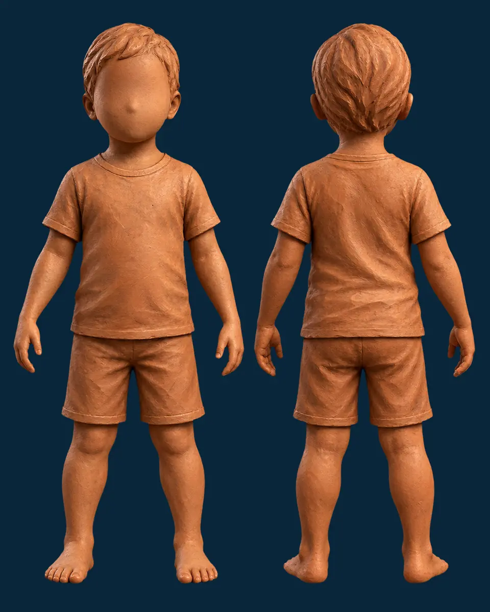
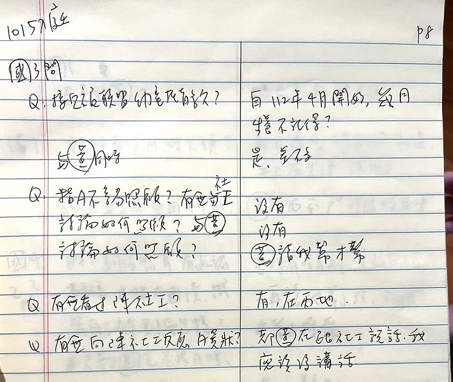
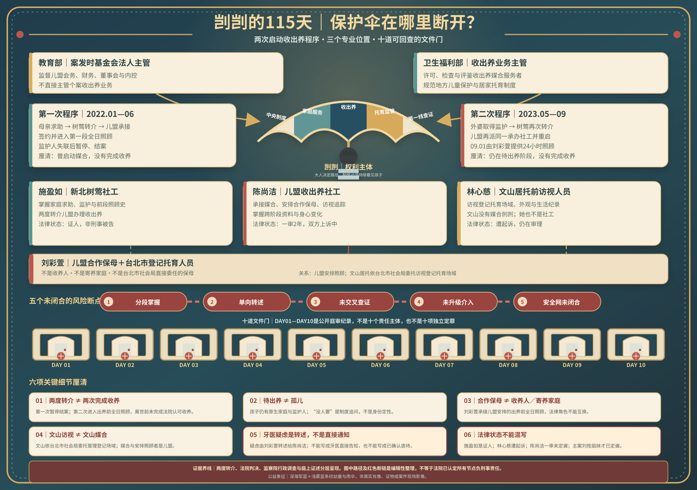
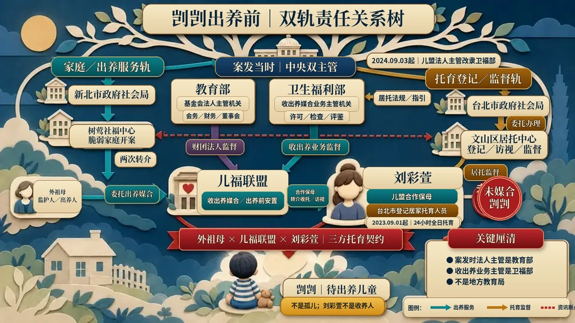

两次启动收出养程序，不是两次完成收养
第一次因监护人失联而暂停结案；第二次在外婆取得监护权后重启，孩子其后进入合作保母的24小时全日照顾。
查看两次程序与来源KAIKAI SPECIAL FEATURE · CHAPTER 02
序幕进站时会立即静音播放，并同步尝试启动网页背景配乐；若浏览器阻挡有声自动播放，请按“播放序幕与配乐”。象征性公益影像，非案件现场或证据影像。

左右和平城市与战火废墟为制度性对照；深蓝、浅蓝条纹衣幼童为象征性公益艺术，非剀剀真实肖像、案件现场或证据影像。海报标题已缩小，避免遮蔽背景与孩子。
本页涉及儿童不当对待与死亡，但不展示伤势照片。篇名“没人要的孩子？”是对制度漂流的倡议提问，不是认定剀剀真的没有人爱、不是指责原生家庭，也不等同“孤儿”。页面不以倡议推论取代法院认定。若你需要暂停，可以先阅读证据标示或直接前往制度改善。
切换会调整全页呈现深度；资料不会删除，深链接仍可直接揭露指定段落。
十五分钟模式：显示人物、机构、医疗警讯与责任闭环。
先用三张卡片建立证据边界，再选择是否进入完整时间轴、证词与制度责任链。
第一次因监护人失联而暂停结案；第二次在外婆取得监护权后重启，孩子其后进入合作保母的24小时全日照顾。
查看两次程序与来源陈尚洁另案一审认定包含未妥善处理掉牙与牙医警讯、未独立查证、未增加访视及未启动通报等疏失；本页另设个案责任专区，并明确区分于社工群体。
进入陈尚洁个案责任专区本页把不能由现有资料回答的部分明列出来，不用倡议推论填补卷证或行政纪录的空白。
查看未清争点十日公开旁听纪录不是一份判决，行政纠正也不是刑事定罪。本页用六种标签，让读者知道每一句结论能走到哪里、不能走到哪里。
以法院新闻稿或裁判摘要为准；一审与定谳分开标示。
只代表该证人在其时间、空间与感知范围内所述。
旁听文字、契约、照片、访视或医疗纪录的公开描述。
用于行政责任与制度缺失，不直接替代刑事判断。
与监察院认定并列，保留彼此差异，不自行裁决。
必须列出推论步骤与限制，不能冒充单一文件直接认定。
公开资料不足以回答，明列缺少的文件或查核方式。
精致木雕戏台以阿里山、春水、桃花与台湾蓝鹊构成岛屿意象；男女戏偶用一场关于远行、重逢与责任的对话，从“大人可以选择”反照“孩子无法替自己选择”。
按下“开演”，让木雕戏台与男女戏偶依序展开对话。
野花年年迎风，春水年年照影；我等一个远行人尚能开口，孩子却不能替自己问：今夜，谁会回来？
我曾把远方当作命运，把归来当作补偿。如今才懂，有些等待可以重逢，有些童年一旦错过，便再没有第二个春天。
你说爱我，却把我留给岁月；大人也常说“为孩子好”，却把他的安全交给下一个人。
若爱只剩承诺而没有查证，若责任只停在门前交接，再华丽的誓言，也遮不住断裂的伞。
看花蝶相逐、柳枝拂水——它们都懂得回望。愿每一个看见警讯的人，也肯多走一步：问清、确认、留下纪录。
任我衣锦还乡，也抵不过一个孩子被及时接住。功名能晚，归期能等，保护不能。
那就别再让谁独自站在十道门前，等每一个大人说：我只看见其中一段。
愿下一个孩子，在伤害发生以前，就有人伸手接住。
监察院不是只检讨单一社工或单一诊所，而是沿着收出养、脆弱家庭、居家托育、医疗辨识及跨县市资讯流，指出多个制度同时漏接。
报告记载社工因把保母视为合作伙伴，未怀疑其说词，把瘀伤、消瘦、安静无精神、掉牙等异常往“适应不良”方向解释，欠缺儿童最佳利益与儿虐辨识敏感度。
儿盟督导容易受到社工选择提供的议题影响；卫福部案后查核所列7类缺失，从出养必要性、安置品质、外部意见到社工训练、督导及法人内控均涵盖。
新北脆弱家庭服务、台北居托监督及卫福部收出养监理，各有职权却缺少跨体系联系、资讯流通与共同确认孩子安全的闭环。
报告认为一岁多幼童三颗乳牙脱落及大块口腔溃疡明显不属常态；医疗端虽建议至大医院检查，仍未敏感察觉成人外力风险并及时通报。
监察院完整调查报告的精确用语是“2度转介儿盟进行收出养媒合服务”。第一次因监护人失联而暂停并结案；第二次在外婆取得监护权后重启。直到剀剀离世，公开资料没有显示曾完成法院认可的收养。
母亲向新北树莺社福中心表示无力扶养、希望出养；树莺以脆弱家庭服务开案。
树莺同时转介数家经卫福部许可的媒合服务者；儿福联盟回复承接并指派社工。
母亲先签出养服务契约，再与儿盟合作保母、儿盟三方签家庭托育契约；孩子进入第一段全日照顾。
因母亲仍是监护人且联系未果，出养程序暂停；外婆接回孩子、另觅周姓保母，儿盟随后结案。
外婆完成改定监护，取得代表孩子处理出养程序的法律位置。
树莺再次把孩子转介给儿盟；儿盟重新开案，并“再派同一位社工”服务。
儿盟社工协助外婆签署出养媒合服务契约，第二次程序正式往前推进。
外婆、儿盟合作保母刘彩萱与儿盟三方签家庭托育契约；剀剀进入24小时全日照顾。
监察院报告将姓名匿名化，但记载第二次“再派同一位社工”；台北地院一审新闻稿则公开指出，陈尚洁是儿盟收出养社工，收案后由儿盟安排刘彩萱全日托育。两份官方资料勾稽后，可以把人物与程序接起来。
监察院未在报告中点名；法院新闻稿点名第二次承办者。因报告明载第二次仍派“同一位社工”，可推知陈尚洁的服务连接可追溯到第一次程序。这是跨来源推论，并非监察院直接点名。
一审法院认为，陈尚洁掌握孩子自出生起的成长轨迹、照顾转换与体检资讯，能把刘家托育前后的巨大落差放在同一条时间线比较。
法院认定儿盟有招募、评估、训练、付款、访视与终止合作等实质工具；陈尚洁则是可以进入照顾场域、亲见孩子并落实这些保护义务的重要人员。
一审判决摘要指出，陈尚洁与树莺社工施盈如形成分工，并掌握收出养资讯传递；“谁叫主责”不是唯一标准，实际资讯与介入能力才是法院判断核心。
台北地院114年度诉字第51号判决认定陈尚洁犯过失致死罪、判刑2年；伪造文书部分无罪。案件仍在上诉，以下只能写成一审认定，不能写成定谳事实。
保母把自撞、磨牙、害怕等异常归因于孩子或前保母，却没有照片、录影或其他资料；法院认为仍未要求提出佐证。
异常都在转入刘家后出现，却仍片面附和保母，把原因归给孩子或前段照顾，而未向前保母核实。
频繁发烧、过敏、受伤与掉牙出现后，未督促完整就医，也未实际确认伤势是否接受妥适治疗。
未增加频率、落实不预约访视、要求详实生活纪录，也未把体检、照片与过往访视资料逐项比对。
停电、其他幼童生病等理由使访视延期后，没有建立必须再次亲见孩子的期限与替代查核。
法院认为，如积极查核、采取适当追踪或通报相关单位介入，有极大可能避免死亡，因而认定不作为与死亡具有相当因果关系。
以下依监察院纠正案文建立日期骨架，再用 DAY2—DAY9 的证词补入孩子的发展、照顾与被看见的方式。出生及离世当日均计入，共672个日历日。
显示 12 个生命节点
监察院纠正案文记载，母亲向新北市树莺社福中心表示无力扶养腹中胎儿、希望出养；1月28日以脆弱家庭服务开案。
DAY8中，外婆说母亲无法照顾，自己曾实际照顾约两个月；这段证词说明家庭接住孩子的起点，也呈现家庭的工作与经济压力。
树莺社福中心转介多家合法媒合服务者，由儿福联盟接案并指派社工。这是地方脆弱家庭服务与中央许可民间媒合制度第一次交会。
DAY3记录萧○香依资料确认照顾期间为5月4日至6月29日。她提到婴儿期手脚较紧绷、曾按摩并回报，但没有描述后来所见的长期站立、自伤或多处伤势。
周○描述孩子会走、会玩、会说简单词语，日常健康活泼；外婆称每月探视两次以上。原公开纪录同段出现8月30日与31日两个终止日期，因此保留一日差异。
5月8日改定由外婆担任监护人；6月21日新北再次转介儿福联盟；7月18日签署出养媒合服务契约。孩子的法律身分与照顾安排同时进入重大转换。
外婆、儿福联盟合作保母与儿福联盟三方签订家庭托育契约。周○说照顾细节主要交给社工，与后手保母没有充分交谈；外婆说更换原因是出养需要与儿福联盟配合的保母。
监察院以9月25日儿盟访视照片与表载9月26日文山新收托访视纪录对照，指出前者可见额头明显瘀伤、后者未载异状。检方2026年另案起诉则指实际访视日可能为9月22日、涉嫌记载为9月26日；此一指控尚待法院审理。台北市先前回应称访视频率、地点符合当时中央规范，访员未见异常。
监察院记载社工观察到安静、无精神，保母以刚睡醒解释。DAY2中，住家看护Mira描述她在特定时段所见的站立、饮食、洗澡与身体变化；她也明确表示不能确认曾到访的正式穿着者就是社工。
保母先向社工表示孩子掉牙；翌日于公园访视，11月25日再由保母转述牙医所提“刺激、不平等待遇或潜在症状”等可能性。监察院另指出医事人员未敏感辨识与年龄、描述不符的风险。资讯虽于12月9日回到外婆端，却未形成可验证的医疗与保护闭环。
保母以其他收托儿童生病为由请社工择日再访，后续以LINE、电话回报；社工未再亲见孩子。这不是「没有联系」，而是联系没有恢复成能直接确认孩子状态的访视。
国民法官法庭认定，孩子在长期营养不良与至少42处虐待性伤势等情况下，因低血容性休克死亡。刘彩萱无期徒刑、刘若琳18年有期徒刑，于2026年7月23日定谳。
这条时间线只收录可回查的司法、行政与制度节点。它不把家属的哀伤、被告事后说法或仍有争议的资料写成已被法院确认的事实；每一项也保留其法律性质。
剀剀于凌晨死亡后，案件由单一照顾现场延伸为保母姐妹的刑事案件，以及收出养、居家托育、脆弱家庭与医疗辨识是否失灵的公共检视。直接施虐主案与其他人员、机关的责任，必须分别判读。
台北市社会局接获通报后原拟派员调查，但市府专案报告记载，刘彩萱当时仍在警局做笔录，调查未能完成。这项行政调查安排，不等于检警已搜索住处或扣押证物。
市府专案报告记载，社会局至托育地点调查刘彩萱；同日并同调查刘若琳。调查当时环境杂乱、弥漫浓浓烟味。这是社会局的行政调查，本页所引公开资料未记载这一天由检警持搜索票进入住处。
市府官方时序记载，1月9日社会局致电警察局时，已知刘彩萱遭羁押；中央社3月报道则载明，检方1月间就刘彩萱声押禁见获准，2月再约谈刘若琳并声押获准。后续公开庭讯也可确认警方曾查扣手机；但本页所引官方公开资料未列完整扣押清单，不能扩写成“检警当天搜索刘彩萱家”。
为保全证据，台北地检署指挥文山二分局兵分多路搜索儿福联盟与陈尚洁住处等地，查扣手机、电脑主机及工作文书。这是针对访查纪录与相关责任的侦查行动；它不同于12月26日社会局至托育地点的行政调查，也不能把搜索或扣押本身写成任何人的有罪结论。
监察院纠正案文记载，两部会在案发后共同查核儿盟，指出出养必要性评估、出养前安置品质、外部共同决策、家庭支持、社工训练、督导与法人内控等7项缺失。这是对机构服务流程的行政查核，不是把儿盟或所有职员直接等同刑事被告。
台北地检署侦结后，以凌虐儿童致死、妨害自由而凌虐致死、伤害致死等罪嫌起诉两名保母。这一节才是对两名保母主案的正式起诉；之后的审判、上诉与定谳，另依各阶段裁判呈现。
卫福部订定并施行居家托育服务中心访视工作指引，要求以不预约、不同时间与亲见儿童为核心；对全日托、夜间托育及3岁以下幼儿应加强访视频率。这是案后可具体查核的制度改变，不等于已能保证每一次访视品质。
卫福部修正地方政府运用居家托育人员照顾家外安置儿童的处理原则；对剀剀这种“名称是托育、生活实质是长期替代照顾”的情况，重点不再只是契约存在，而是跨机关资讯、亲见与风险升级能否真正闭合。
台北地院就保母姐妹主案宣判：刘彩萱无期徒刑、刘若琳18年有期徒刑。这是直接施虐主案的判决，不应和社工、居托访视或行政机关的责任混成同一条法律结论。
监察院从收出养监督、脆弱家庭服务、居家托育管理与跨县市资讯流检视本案，纠正三个政府机关，并将儿盟社工违失资料移请司法机关参酌。这是行政调查结论，与个别刑事案件的证明标准不同。
台北地院认定陈尚洁就本案具具体保护义务与保证人地位，判处过失致死2年；伪造文书部分无罪。检辩均已上诉，故本页只称“一审判决”，不预先替二、三审下结论。
最高法院驳回上诉，维持刘彩萱无期徒刑、刘若琳18年有期徒刑。至此定谳的是直接施虐主案；照顾路径中其他人的刑事程序、行政改善是否落实，仍须各自追踪。
这不是逐分钟重演，也不是替卷证补写情节。以下只把法院已认定的时间边界、公开庭讯片段与医学机转放在同一条线上；每一步都标明证据强度。
DAY9中，检察官问刘彩萱是否曾向辩护人表示A童“中午以后活动力不佳”，她回答“有”。这可支持下午已有明显状态变化，但仍是被告回答，不是连续医疗监测。
DAY9 C51｜查看原问答台北地院一审新闻稿将共同凌虐、伤害与限制自由的犯罪期间认定至12月23日晚间10时许。这是一段期间的终点，不等于法院已公开认定“10时整发生某一个特定动作”。
法院新闻稿 ↗DAY1公开旁听纪录载有12月23日对话：“没心跳了”／“继续救”；不争执事项另载刘彩萱配偶替孩子做CPR并拨打119。这证明危急后的救护节点，不能反推心跳停止前的完整经过。
DAY1｜不争执事项与对话纪录法院认定长期营养不良、身体衰弱及至少42处虐待性伤势，最终造成组织细胞血液灌流不足与低血容量性休克。DAY5医师证词同时说明深部出血、水肿、束缚、久站与营养状态的累积机转。
DAY5｜死亡机转在最后一日前，孩子已有长期身体伤害、营养不良、衰弱、精神创伤与未积极就医的累积；最后一日的活动力下降与休克，是这条累积伤害链的末端。
从中午后活动力不佳，到后来无心跳才出现的公开救护纪录，可合理推论危急恶化不是在送医瞬间才开始。若更早接受完整评估与医疗，可能存在不同的救援机会；但公开资料不能量化概率或确定哪一分钟仍可逆转。
现有公开材料不能确定最后一餐、最后一次伤害、每项伤势的形成时间、每分钟在场者、心跳停止的精确起点，或哪一名被告在最后数小时做了哪一个动作。
以下依DAY5吕立医师与许倬宪法医师的公开庭讯整理。示意图只标示身体区域，不呈现写实伤口；同一区域可能有多处、新旧不同的伤势，已愈合而看不见者也不在“至少42处”之内。

1234567 剀剀全身伤势区域陶土艺术示意图 以正面与背面陶土幼儿艺术人形标出头脸、口腔牙齿、颈肩躯干、双臂手部、腹部、臀部生殖器与双腿足部七个阅读区域；不呈现伤口。陶土人物不是伤口照片，也不是按比例重建；编号与艺术人形只协助读者理解“全身性、多区域、累积性”的医学证据。
两侧额部头皮出血、头皮多处皮下出血；额部瘀伤、左眼皮整片瘀青、两耳含耳廓内侧伤痕、脸颊勒痕，以及鼻孔两侧严重伤势。医师认为多项位置与形态不符合一般意外或单纯自撞。
嘴唇瘀伤、左嘴角裂伤，上牙龈、系带与嘴角黏膜严重受损；PMCT显示下排3颗门牙断裂、1颗连牙根脱落，另有断痕已被牙龈长回包覆。医师排除蛀牙与磨牙造成这种结果。
颈部大片瘀伤与刮痕、左肩大片瘀青；影像显示左肩胛骨喙突骨折。法医另记载颈、胸、腹、背部表层皮肤瘀伤，但体腔没有出血。
双上肢均有瘀伤；右手掌至手指为重大外力造成的深伤，涉及皮下组织与指甲沟。左前臂部分伤势可能与急救点滴有关，其他范围则不能由点滴完整解释。
左下腹有瘀伤；医师指出腹部柔软、骨骼在后方，要相当外力才会形成该处出血瘀青。照片与生长曲线另显示慢性营养不良、体重与身高区间下滑、肋骨明显及体形消瘦。
臀部下缘皱褶被医师视为营养不良表征；阴囊左侧与生殖器有新旧伤痕、刮伤与深裂伤。鉴定意见列为高度疑似性虐待，但特别说明不必然具有性意涵。
右腿解剖测得约13厘米瘀伤；脚踝肿胀较符合捆绑与久站脉络。足底伤势无法分辨是捆绑或殴打；常见意外部位如小腿，伤痕反而不明显。
法医将外力、束缚与久站造成的出血、水肿和软组织液体淤积，连到血管内液体不足、器官灌流下降与低血容量性休克；营养不良降低身体承受力，两份鉴定对其在死因排序中的表述略有不同。
“看起来像饥荒儿童”是外观比喻，不是诊断名称。剀剀的照片在不同日期呈现不同阶段，不能用单张影像把整段病程固定成同一种外观。
吕立医师说明，12月3日照片已可见营养不良，当时“肚子鼓尚未消、脸变小，之后会凹下去”；同一段回顾也描述后期肋骨清楚、腹部不再维持鼓胀。这表示外观会随失养与体液状态恶化而改变。
严重急性营养不良可伴随双侧凹陷性水肿。蛋白质／白蛋白不足可能降低血管内胶体渗透压，使液体进入组织或腹腔；水肿、腹水与肌肉脂肪流失，都可能让腹部相对突出。WHO也指出合并严重水肿的营养不良儿童死亡风险更高。
DAY5记载先前医院没有做白蛋白检测；公开庭讯也没有以完整腹部超声、白蛋白、肝肾功能与腹水分析确认单一原因。气体、粪便、姿势、器官肿大或体液也可能影响外观，不能从一张照片下诊断。
左右对话框不是让证词互相抵销，而是把时间、观察范围与证据界线放在同一画面。文字采忠实摘意；完整问答请回原庭期。
孩子会走、会玩；外婆形容健康、活泼、调皮。
DAY3证词与行政调查出现长时间站立、安静无精神、消瘦等变化。
DAY2奶量等细节主要告诉社工；与后手保母没有充分交谈，只请她多爱、多疼、多抱孩子。
查看原问答把交接不足、分离焦虑与支持系统不足列为解释或量刑脉络。
查看辩论她曾看见一名穿着正式的访客，但明确说不能确认对方是否为社工。
查看证词界线儿盟与居托中心各有具日期的访视纪录；每次看见的场域、孩子状态与查核方法并不相同。
监察院资料 ↗谈到其他收托儿童受伤时会拍照、记录或回报；本案却出现担心被停止派案、失去收入的说法。
DAY9｜收入与隐瞒两名被告的具体参与与共同犯意，已由法院依对话、影像、证词及鉴定综合判断。
法院新闻稿 ↗后期资料出现自撞、害怕衣架、适应不良等说法，部分由保母转述给社工。
DAY7｜跨证词核对前保母未见相同行为；法医、儿保医师与儿童精神科医师要求把伤势、营养与长期情境一起判读。
DAY6｜证据链承认部分捆绑与不坦诚，并说「是我造成的」「是我的错」；其他行为仍有否认或不同解释。
完整问答否认共同犯行，承认删除对话并称部分行为需要修正。
完整问答以下把DAY2—DAY9实际出现的生活证人、被告证述与鉴定意见全部列回来。DAY1是程序与争点、DAY10是科刑论告，没有新增证人。
晚期住家内的日常片段、声音与空间；不能确认未亲见行为或访客身份。
最长一段交接前照顾、健康发展与探视基准；起讫日期保留一日落差。
约4至5个月大时的短期全日托育、手脚紧绷与回报；不能延伸到后期。
后期住家内零散所见、哭声与物件；自述不参与照顾，也未必每日在场。
出生后照顾、家庭条件、出养决定、前段探视与事后修复界线。
同业照顾者的观察、行动与角色自述；多次回答遗忘，并持续否认共同犯行。
三处照顾动线、具体作法、通报与陈述变化；承认部分行为及不坦诚。
解剖、死亡机转与伤势型态；不以法医判断替代每一行为的法律评价。
伤势分布、营养与儿虐辨识；精确受伤时间仍有医学限制。
长期、多重不当对待及心理创伤的回溯评估；不诊断两名被告。
两名被告的个人情状、治疗动机与复归条件；不重写孩子的伤势与死因。
这是另案审理中的证人证述，不是剀剀主案十日庭讯，也不是完整逐字稿。以下依公开一审开庭纪录摘要与法院新闻稿，把证人的制度观点放在左侧、一审法院的判断放在右侧。
本专区把「个案责任」与「2/23讯问、2/26陈述」合并阅读，目的在厘清陈尚洁于本案的实际分工、注意义务、风险查证、通报作为及可能的法律责任。以下是旁听笔记与媒体法庭报导的整合重建，不是法院官方逐字稿；逐段区分被告说法、检方主张、证人证词与一审法院认定。
从起诉、首次审查庭、准备程序、密集证人调查，到一审宣判；同时区分“首次开庭”与“准备程序后首次密集审理”。
检方侦查终结后向台北地院提起公诉，并建议法院从重量刑；案件由侦查阶段进入一审。
陈尚洁否认伪造访视纪录等指控；法院同日限制出境、出海。这是本案一审首次开庭节点。
陈尚洁仍维持不认罪，辩方主张起诉所述工作内容与实际职责存在落差。
陈尚洁主张不是主责社工、访视时未见须通报的特殊伤痕；法院安排9月25日续行最后的争点整理。
这不是一审第一次开庭；正确定位是准备程序完成后，开始密集调查证据与讯问证人的重要节点。
庭期分布于2025.11.27、12.11、12.18及2026.01.22、01.29，逐步厘清主责、身心追踪、纪录时效、医疗警讯与组织分工。
阅读12名证人全文台北地院于2025年9月25日下午召开陈尚洁案第四次、也是最后一次准备程序庭，庭讯约进行两小时，至下午4时许结束。这次庭期处理先前尚未完成的准备事项，并为后续实体审理整理范围。
这是准备程序庭，不是证人正式作证、被告完整讯问、最终辩论或宣判。
依当日公开报导，陈尚洁仍否认犯罪，主张自己不是主责社工，也没有公权力；辩方争执检方所指工作内容、持续追踪与监督义务，以及被指疏失与剴剴死亡间的法律关联。
法官与公诉检察官、辩护人整理双方的争执及不争执事项，确认后续要调查的证据、证人的必要性与待厘清问题。公开报导显示，核心包括陈尚洁在出养与照顾安排中的实际分工、是否负持续追踪义务、工作纪录完成与修改，以及警讯处理和死亡结果间的法律关联。
检方声请传唤8人，类型包括4名儿福联盟现职社工或主管、2名公部门社福人员、1名卫福部社家署人员及1名参与剴剴急救的医师。公开报导可确认其中包括万芳医院医师黄圣心、文山居托中心督导黄玲芳及儿福联盟相关人员。
检方希望透过证人厘清陈尚洁是否负责剴剴出养案件、是否未依法履行持续追踪、是否未按时完成工作纪录，以及纪录内容与主观认知等问题。
辩方声请传唤案发时儿福联盟执行长白丽芳、曾替剴剴看诊的牙医蔡函妤，以及文山居托中心前访视员林心慈。辩方希望厘清访视后应于多久内完成纪录、相关法律依据、工作分工及其他反证事项，并质疑部分公部门证人可能与案情有利害关系，请法院审酌传唤必要性。
家属代理人主张，蔡函妤仅曾看诊一次，对陈尚洁是否履行持续追踪义务的关联有限。检方亦质疑牙医是否能掌握剴剴当时身体其他部位伤势；辩方则将其列为反证证人，希望厘清看诊、转诊及相关讯息。
法官询问双方有无和解意愿。公开报导记载，陈尚洁表示没有意愿谈和解；剴剴外婆的律师表示，因陈尚洁不认罪且先前已表示无和解意愿，被害人家属亦无意再谈和解。
这是2025年9月25日当庭立场；量刑时法院如何评价，应另以其后判决理由为准。
法院庭末排定后续密集审理。不同公开来源对庭期列法略有差异：TVBS列出10月23日、11月13日、11月27日、12月4日；知新闻及当日公开纪录另列11月6日。本站并列差异，不自行删改任何一方。
后续12名证人全文页依实际旁听资料标示的证人庭期为2025年11月27日至2026年1月29日。
法庭勘验：112年11月23日诊间影片显示，照顾者以磨牙解释掉牙；牙医认为多颗乳牙因此脱落的可能性极低，建议至大医院进一步检查并安排追踪。检方指出孩子反应低落；辩方强调照顾者在诊间表现积极，外露部位未见明显伤势。
检辩攻防：检方主张部分工作纪录与客观资料不符；辩方争执主观犯意、传闻证据及侦讯方式，合议庭则逐项判断勘验必要性。
检方问：陈尚洁的收出养资历、承办量与儿虐辨识训练为何？
陈尚洁答：她毕业后长期从事收出养工作，曾任职有自设安置机构的忠义基金会；儿盟课程对儿虐的介绍较初阶，无法让社工像医师一样诊断儿虐。
重点：责任是否要求「医疗诊断」，或只是要求发现警讯后查证、转介与通报？
检方问：外婆与周姓前保母希望延续照顾，为何仍改由儿盟合作保母？
陈尚洁答：保母须由列册名单及机构会议评估，并非她一人决定；她认为孩子需要更多发展刺激，刘彩萱具幼儿工作经验、教具与合宜教养理念。
审判长追问：她是否曾向主管表达个人偏好？她否认，称只在会议说明个案需求。
检方问：9月至11月三次访视的目的与内容为何？
陈尚洁答：与照顾者了解健康发展、认识孩子并建立关系；访视一般安排约一小时。
法官追问：每次确实待满一小时吗？她先答「应该有」，再以自己的工作习惯确认。
重点：形式上的访视时数，不能替代对伤势、营养、精神与医疗结果的实质查核。
检方问：照顾者称孩子自撞、自摔、怕衣架、磨牙及骂脏话，陈尚洁访视时是否亲见？
陈尚洁答：当下没有直接观察，但认为可能存在；她曾透过施盈如询问前保母，虽前保母否认，仍推想对方同时照顾多人，可能未注意到孩子异常。
重点：没有亲见、前保母否认，却仍采信新照顾者的单方解释。
检方问：为何9月访视照片延至10月才与后次照片一起传给外婆？是否担心外婆质疑照顾品质？
陈尚洁答：顾念外婆辛苦、怕她担心，但自认仍有说明状况；对手腕伤痕则接受照顾者所称皮肤过敏抓伤。
检方再问：在磨牙、掉牙等异常下，为何仍向外婆形容保母用心爱护？她答因保母持续主动分享资讯，因而信任其陪伴。
检方问：得知第四颗牙「咬加磨弄掉」、牙医提及不当对待疑虑并要求大医院检查后，为何没有陪诊、确认转诊或通报？
陈尚洁答：有与同组同仁讨论，大家对掉牙都很惊讶；她认为保母表达清楚，所以无须陪诊。综合照顾者说明后，她判断未达通报标准，并相信社会安全网中若有人认为疑似受虐就会通报。
重点：把「其他人也能通报」当成自己不通报的理由，正是安全网共同失灵的核心。
法官问：9月额头大片瘀青，有无擦药、确认颅内伤害或追踪就医？
陈尚洁答：曾向保母了解，孩子看来没有特别不适，瘀青会慢慢好。
法官再问：11月高烧未能接种疫苗，是否追踪退烧与补打？她表示发烧有不同观点，也可能提升抵抗力。
法官追问：为何照顾者提出的前提，总让她作出不同于一般风险判断的结论？
检方提示：交接前健检身高体重正常，托育后未见成长且最后明显消瘦；先前辩方所称「抽高变瘦」如何成立？
陈尚洁答：当时感觉孩子确实有长高，并称会依工作期程确认健康发展。
法官提示：托育前数月有多次皮肤科就医，转托后到死亡仅少数就医；她答不知道先前就医史。
检方问：11月最后访视后曾说要约12月中，为何到12月24日仍未完成？
陈尚洁答：仍在连结咨商资源，也考量疫情、双方时间与保母同时照顾两童的困难；并非不打算访视。
审判长追问：住处仅相距数站，是否可短暂见面或请其他家人协助？她仍强调需要完整互动时间与准备。
检方问：为何同事12月29日索取访视纪录时仍称尚未完成，扣押电脑又未见所称Excel？
陈尚洁答：平时可能先记在Excel、通讯小笔记、照片或录影，再于月底或事后依对话整理到Word；她以为同事问的是完整Word档。
法官提示：另一名儿童的成长月纪录巨细靡遗，为何剀剀没有？她称尚未媒合者记在工作处遇纪录即可。
界线：纪录完成时间与可信度可受检验；一审伪造文书部分仍判无罪，不能迳称故意造假。
受命法官问：9至11月请假共约10日，是否使个案跟进延迟？
陈尚洁答：工作使她感到耗竭，需要就医、休息，也有旅行及婚礼行程；她认为均属合理安排，没有影响工作。
重点不是请假本身，而是案量、代理与纪录能否证明警讯在休假前后仍被持续接住。
法官问：何时确认孩子遭虐？
陈尚洁答：急救当天听医师说明后才接收到相关资讯；即使拍摄全身伤势，当时情况混乱，仍须将医师说法与客观状况比较。
法官追问：此前是否曾一度怀疑保母说法？她否认。
关于到院：她说收到保母通知后先联络外婆与督导，再从住处步行至万芳医院。
法官问：为何没有把保母联络方式交给树莺社福中心，使其能掌握孩子状况？
陈尚洁答：对方没有问；若对方需要就会提供。她并主张自己仅负收出养范围，不确定还要负何种责任。
笔记提示：她笔记中曾写「剀，主责」，解释是指树莺社工，而自己是基于出养目的与孩子建立关系。
检方问：与刘彩萱究竟是何关系，为何她说什么都相信？
陈尚洁答：两次合作及他人观察都呈现刘彩萱积极、关心孩子；事后才知道爱护形象是伪装，而且演得很真。
陪席法官问：她是否容易相信别人？她答可能有一点。法官再指出，她自己也是专业者；当专业冲突时，为何总选择相信别人？
法庭核心：安全网不能由每个人相信下一个人，最后却没有任何人真正接住孩子。
检方问：Word工作纪录是否在12月24日后才完成？搜索扣得电脑与笔记本，为何未见她所称的Excel？
陈尚洁答：平时先在Excel、通讯对话、手机笔记、照片或影片留下资料，再整理到Word；她记得Excel存在，但不能确定Word最终完成日期。
时间线：12月29日叶诗宇索取截图与访视纪录时，她说尚未完成；翌年1月8日讯息又提到仍在撰写，连11月20日访视也待补。她解释前者所问是完整Word，而非散存资料。
界线：完成时间与可信度可受检验；一审伪造文书部分判无罪，不能把案后整理直接写成故意造假。
检方问：急诊团队未把案件当作一般意外，工作纪录为何写成医护曾说「疑似意外」？12月29日又为何把手臂抓痕、异位性皮肤炎与会阴伤势连在一起？
陈尚洁答：现场混乱，她依医护安慰外婆时的印象记录；对会阴伤势则称当时不知成因及行为人，只是在有限资讯下思考可能性，并非替照顾者开脱。
争点：事后推论若无同期照片、诊断或直接陈述支持，不能反过来当成案发前已查证的事实。
法官问：笔记中「剀，主责」是指谁？即使不叫主责，她是否仍需观察孩子健康、发展并建立关系？
陈尚洁答：「主责」均指树莺社福中心／政府端社工；但她确认自己仍要了解孩子健康发展、建立关系，并为媒合寻找合适照顾安排。
关键承认：职称可以争辩，但她当庭承认自己对健康、发展与关系建立有实际工作责任。
希望透过专业人员提供协助。我没有因为她说了什么，就直接认为前一名照顾者做了这些事情；我不是这样认为的。同时，我在与曾接触过收出养社工或司法体系的人讨论这件事时，她也给我一些个人评估与判断。我要表达的是，我不是自己一个人就做了这些决定。一方面，更换保母的决定主权在外婆，我完全尊重她；另一方面，我也很信任其他网络，所以当其他社工或医师这样说时，我也会纳入评估。我在做处遇与后续安排时，都是与督导讨论，依据机构流程进行。
有关刘童的工作处遇纪录，你是在112年12月24日刘童死亡之后才陆续完成的吗？
如果你说的是那份 Word 檔，是的。但因为我平时的工作习惯，是把个案信息与服务处遇打在 Excel 表里面，这是我个人的习惯。所以我都有陆续依据工作安排记录在 Excel 上。但机构的制式表格是 Word 文件，所以当需要提交报告时，我会再把 Excel 表里面的资料整理到 Word。这个工作处遇纪录的内容是有所依据的，依据是我服务过程中持续累积的纪录。Word 档确实是在12月24号以后才制作，但这两件事都是真的。
检方有去儿盟搜索，有扣押你的工作计算机与笔记本，没错吗？
有。但没有看到你所说的 Excel 档的内容。我不太确定他是不是看了我所有的数据，但我的档案确实存在我的计算机里。
那你大概是什么时间点完成并提出最后的工作处遇纪录？
我现在其实有点不太记得这份 Word 档是什么时候完成的。
好，再来就是你跟叶诗宇的对话。他曾经问你这一案与保母的对话纪录或访视纪录借他参考，你有传送一个截图的连结，说「截图在这边，纪录……我还没有完成」，他回「没关系」。所以到112年12月29号，你还没有完成，是吗？
对，我还没有整个完成。因为我还持续在服务，所以我当然会持续撰写。那时候整份纪录还没完成，所以没有提供给他。我传截图是因为我觉得他当时想要的信息用截图比较快。
提示侦卷8第88页。你在113年1月8日下午5时51分与叶亭希的对话纪录里提到：“刘童的纪录这几天在写，觉得有点煎熬；事发前剩下11月20日的访视纪录，事发后的内容有点多，我也还在写。”所以在“113年11月18日”，你好不容易写完前面的工作处遇纪录，还剩11月20日的访视纪录没写，是吗？我想确认，你是怎么样在事后回想这四个月每天做了什么事情，然后去写？〔纪录中检察官先提示113年1月8日，后又说“113年11月18日”；后者依上下文应属当庭口误，仍以官方笔录为准。〕
我们的工作纪录有分不同的部分。一部分是联系纪录，可能用通讯软件或电话联络，我会写笔记并参考这些内容制作。每一次访视，我会拍照、录像，并在通讯软件里写小笔记，让这些内容呈现访视纪录。
所以我跟你确认，除了你去访视的那3天之外，其他你跟刘彩萱之间的联系，你是回去看你跟刘彩萱的对话纪录，一一地把每天发生的事情写在工作纪录，是吗？工作纪录就是这样制作的，是吗？好，你的过程就是看对话纪录，再整理每天的内容，把它抄上去，是吗？
我觉得这个问题有点曲解我的意思。我想表达的是，我确实把这些内容写在我的工作纪录里面。虽然你说是抄，但我认为是整理。我把它整理到我的工作纪录上，这些就是我们沟通的过程。
我认为这是一个很正常的过程。
对，我只是想确认你制作纪录的方式。
因为一般人不可能在事发之后，回想自己这4个月每天做了什么。我想要说的是，我的制作方式是依据对话纪录，把内容整理上去。如果你是想问我是不是在12月24号以后才做这件事情，我可以明确回答：不是。因为我每个月月底都会检视这个月的服务过程。有些时候我在检视当下就做纪录，有些时候因为联系在外面或同时处理其他事情，没办法立刻记录。但我有依据，就是对话纪录。所以我会在每个月或依照工作安排，把我们的沟通内容整理到工作纪录上，还有包含访视等信息。我会按照工作流程，每月定时回顾并统整纪录。
如果你每个月都有做的话，为什么叶诗宇跟你要访视纪录的时候，你只给他截图纪录？
因为我还没有完成。就如同我说的，我整理的是在 Excel 上面，但当时我可能有点死脑筋，觉得他想要的是一份完整的 Word 版，而那份还没有完成。
在112年12月24日检察官相验刘童的时候，你有到场，是吗？没有接受检察官的讯问。这部分可能比较少，在附件26第21页有记载。这是该次相验程序，检察官在最后请全体到场人员进入相验处所，之后法医说明相验状况。法医当时说：死者身上全身都是伤，头部有伤，腿部有伤，双手都有伤，背部、大腿、膝盖、小腿都有伤，包括生殖器也有擦挫伤。这些伤上上下下都有，死亡原因可能与这些伤有关，至于哪个伤是致命的，要等结果确定死因。你在现场听到法医这样说明刘童的状况。万芳医院的医护人员也证述，他们的医疗团队没有人认为刘童是意外死亡，也不会有人这么说。为什么你在事后补写工作处遇纪录时，还会写出「护理师告知疑似意外所导致」？
首先，针对孩子的状况，我在12月24日当下确实知道一些信息。就如同前面所问，我有把医师给我的信息纪录在处遇纪录里面。在当天到医院后，有一名医师在我和督导陪同外婆时，提到过这件事。我的印象是，他的重点在安抚家属情绪，并不是下判断。但因为当时我听到这样的说法，所以我在纪录里写下了这个印象。我没有必要说谎，只是把当时的印象记录下来。
首先，针对孩子的这些情况，你当下是知道的吗？如同之前所问，你是怎么知道的？
当下我知道的这些信息。就如同律师前面所说，我有把医生给我的信息纪录在处遇纪录里面。在我当天到医院以后，有一名医师在我和督导陪同外婆时，说明了孩子的状况。我印象中这些内容也写在纪录里面。如果你是想问我是否知道这些状况，我可以说是知道的。后续在陪同外婆一起去听医师说明时，那位女医师有带到这件事情，但这并不是她的重点。我的理解是，她主要是想安抚家属的情绪，告诉外婆孩子靠机器维持很辛苦，最后关掉机器。她的语气很像是在安抚外婆，并提到「不太确定原因，有可能是意外」。因为她当时有带到这句话，所以我在急诊室的印象里留下了这个片段。事后我才理解，医师可能只是转述或安抚，并非专业判断。但在当下，我听到这样的说法，就把它写进纪录。因为我不是医生，无法判断真正的死因，只能依据当时的印象纪录下来。
我跟你确认，真实的情况到底有没有一位医师或护理师，在案发现场告诉外婆「刘童疑似意外导致死亡」？有还是没有？
有这么一个人。刚刚的描述就是他在解释事情时带到这一点。我的印象就是如此。我没有要隐瞒任何事情，只是把那一天漫长的晚上中，我印象深刻的部分写在纪录里。不过，无论是医师或护理师，甚至后来作证的黄医师，他都说自己没有这样讲。
所以是医师说谎吗？还是你说谎？
首先，我没有说谎。如果我当时的印象没有听到这件事，我就不会这样写。我没有必要编造，只会把我印象中经历的事情写在纪录里。再者，这件事情已经有点久远了，医师每天面对那么多病人，他可能也不太记得当天是否有这样讲。他后来也说「也许有可能这样说过」。所以这都是充满不确定性的。我只是依据当时的印象纪录。我再强调一次，我没有必要说谎，我是真的有这个印象才写下来。但因为时间久了，每个人的印象可能都不清晰。
我这样问好了，你写这样，是不是要说连护理师都看不出来？
我没有这个意思。
提示侦卷九第136页，在叶诗宇和陈尚洁的对话里，叶诗宇曾在12月29号问过：「讯息中刘彩萱有提到会阴部的伤口吗？」你回答：「她没有直接提到，但我去看她时，她手臂上有明显的伤口，他们说是她自己抓的。印象中她有说过像是异位性皮肤炎，所以那些关节容易痒，所以会阴部应该算在这部分。」你还特别括号说「她没有直接说会阴部」。请问，刘童的伤势可以这样算在刘彩萱所提到的借口里吗？你是在帮她找借口，还是在帮她批注？
我必须还原当时的状况。虽然我12月24号有到现场，听到一些说明，也看到一些状况，但直到12月29号我仍然不知道到底发生了什么事，也不知道是谁造成的。后来到1月以后，我们才知道是保母自己造成的，而且做了很多可怕的事情。但在12月29号时，我真的不知道真相。同事来询问时，我只是回想自己接收到的信息，思考是否有可能是这样。这些只是我在回想与思考，并不是我能判断或下结论的。
确认一下，你到底是怎么帮刘童做他的宝宝成长评估？具体的方法是什么？
具体的方法就是我在访视时会自己观察，也会询问保母孩子的生活照顾情形，以及他们观察到的发展状况。因为访视只有一个小时，很多时候我们无法在短时间内了解孩子各方面的状况，所以我们很仰赖照顾者提供的协助，帮我们做评估与观察。在前面其他社工，包括托访视人员，也是这样做的——询问照顾者，并观察照顾状况。我也是用这样的方法去了解，并记载在工作纪录里。
所以你的意思是，你是用工作处遇纪录来代替宝宝成长纪录这件事？可是你这份工作处遇纪录根本就是事发之后才慢慢依照你所谓的 Excel 档去补写的。而且按照你们儿盟的说法，事发之前就应该缴交了，根本不是每个月写一次。那这样到底算什么？
我不这么认为。应该说这些信息是每个月都有被笔记或记录下来的。只是没有在事前缴交完整的报告。这一整份完整的工作处遇纪录，是我在收集到信息的当下就记录下来的，确实是该月份的内容没有错。我们要把它写在工作纪录里面，是因为我们想要知道整个历程里孩子的各种状况是否有变化，或者他当时的情况如何。所以我们在工作纪录里面呈现这些信息。
在112年10月6号，你确实传送讯息向刘彩萱索取刘童的照片，对吗？
没错。
请问刘彩萱有回应吗？
没有。
那她后续怎么回复？
她过了几天以后告诉我，之所以没有回复，是因为她的手机送修。
所以你根本没有在这个时间点从刘彩萱那边拿到任何照片，是吗？
对。
那你工作处遇纪录上怎么没有写「保母因手机送修，未提供」？
我有对照对话纪录，但我是摘要重点部分。我觉得重点是服务过程，而不是她没提供照片。
所以你的意思是，只要呈现你有做的事情，结果不重要？
不是。如果她有提供，我就会写「她有提供」。
那你在10月传送刘童照片给外婆的时间，是不是直到112年10月24日，才把你9月25号拍到的照片连同10月访视的照片一起传送？
没错。
提示侦卷14第14页，这是被告的工作处遇纪录。在10月的工作处遇纪录里，为什么没有记载你于10月24日将9月25日及10月23日的访视照片一并传给外婆？是否因为怕外婆担心，所以没有写入工作纪录？为什么没有记载已传送照片这件事？
这其实是一个很好的问题。我一直以为自己有写，后来才发现原来没有。我必须澄清，我没有要狡辩。我确实有做这件事情，不写反而对我不利，所以我没有理由故意不写。应该是在整理的过程中漏掉了。10月24日，我不只传送照片给外婆，还有打电话跟她说，也有打电话给督导社工。但这些事情都没有被记在10月24日的纪录里，我自己也很困惑，因为这明明是很重要的事情。谢谢检察官提醒，我真的有做这些事，但不知道为什么纪录里漏掉了。
可是你说不是事发之后慢慢补写吗？既然都有对话纪录可以参考，为什么还会漏掉？是不是只写了不是重点的东西，反而把重点漏掉？你到底想要掩饰什么？
我觉得这部分可以呈现的是，我知道这是重点，我也有想要写。而且我不是只看对话纪录来写，我也看了自己的笔记。理论上应该有写，但在填写过程中没有呈现出来。我现在也不知道当时为什么会漏掉，但我可以想象当时的情况：我同时在写纪录，也同时在处理外婆的联系和其他个案的事情。那段时间我每天几乎都在跟外婆联络，特别是12月26到27号之间。我的意思是，我同时在写纪录，也同时在处理很多事情。因为当时很混乱，所以现在也很困惑，为什么没有呈现在纪录里。但我没有理由故意不写，只能推测是因为太忙碌而漏掉了。
最后我想问你一个问题：历经整个侦审过程后，你还是不知道自己在做什么吗？
我从来不是这个意思。我没有在整个程序中说过「我不知道自己在做什么」。我一直想要说明的是，我是一个出养社工，所以我负担的责任和工作的内容，就是出养社工的工作。我知道这是我的工作，也是我的责任。
我跟陈女士确认一下，本件案发当天，是谁通知你刘童送急救的事情？
我可以还原一下当时的状况。我是收到刘彩萱传给我的讯息，然后她也打电话通知我。
那请问你过了多久才到医院？基准点是收到通知之后。根据医院的记载，时间应该是过了半个小时到一个小时。你还记得怎么去的吗？是从家里走路过去吗？当时你住在哪里？
当时我住在新龙路，是从住处走路到万芳医院。
所以不是你现在的居住地。再确认一下，你说在本案案发之前，就已经和刘彩萱有合作过了，是吗？
对。不好意思，刚刚那个问题我可以补充吗？就是审判长问我过了多久到万芳医院，我刚才回答大概半小时到一小时。但我想补充的是：我收到讯息当下，先知道要联络监护人，所以我先去处理联络的事情。之后刘彩萱才跟我说希望我到医院。因为这件事我不能自己决定，所以我又花了一点时间和督导确认，才到万芳医院。
所以你是从新龙路的住处走路到万芳医院。再确认一下，你说在本案之前已经和保母合作过一次，是吗？那一次也是你决定要和保母合作的吗？
不是。保母的安排都不是我决定的，而是由负责保母业务的主管依据当时的状况做安排。有时候我们也会透过开会讨论，哪些孩子需要托育资源，哪些保母有空缺，怎么安排比较合适。
所以是开会决定的？你也会在会议中表达意见吗？
我们会说明个案的状况，然后一起讨论。但我没有特别表示希望哪位保母来担任这个孩子的照顾者。
所以你不能表达任何意见？
我的意思是，我们会在会议中说明孩子的状况，并讨论什么样的保母比较合适。比如说，这个孩子当时已经一岁多了，可能需要比较多的发育刺激。有些保母比较擅长照顾零到一岁的孩子，有些则适合年纪更大的孩子。所以我才会提到孩子的年龄，来讨论哪种保母比较合适。但我不是指特定的某位保母。
所以你不是指周保母？
不是。
所以你没有针对本案选哪位保母表示过任何意见，是这样吗？
就是我刚刚提到的，开会时会讨论，但我们讨论的内容都是针对已经列册的保母名单。我不是在名单里面做决定的人，安排保母是主管的业务。
当时名单有哪些人？
证据清单里有一页有提到，大概有十个人左右。当时刚好有好几个孩子需要安排，有些年纪比较小，就安排给擅长照顾零到一岁的保母。而刘彩萱有幼儿园工作经验，家里也准备了相关教具，教养理念和对儿童发展的理解都有一定程度的专业，所以大家综合评估后，觉得她适合照顾一岁以上的孩子。
大家不约而同的决定，是这个意思吗？
是大家共同讨论的结果。
大家也包括你。那是不是因为她家离你家特别近，所以选择刘彩萱作为保母？
不是。距离并不是决定哪位保母合适的因素。
那如果保母家有人生病，不能在家里访视，难道不能让她把孩子带到楼下来看一下吗？
不行。访视安排的目的，是希望双方能好好讨论，并且让我能和孩子有互动。我们通常安排一个小时的时间。再加上疫情之后，大家对健康状况更谨慎，如果有人生病就会改期，重新安排。
在过往服务的个案里，你有没有曾经用户外探视代替居家访视？
有。
那为什么本案也有在公园进行访视？11月20号、12月20号没有安排访视的原因是什么？
不是因为不安排，而是当时保母提到另一个孩子有健康状况需要处理。加上疫情之后大家对生病更谨慎，所以暂时没有安排，但并不是不安排，只是延后。
所以保母有提到小朋友有健康状况，是吗？
她提到的是另一个孩子有状况。但因为她同时照顾两个孩子，所以也会影响到刘童的照顾。
那11月户外访视时，保母也是带两个孩子一起下来？
是。
不好意思，刚才检察官问你有关处遇纪录的过程，你说有 Excel 档，也有文本文件，还有纸本笔记。我跟你确认一下，你的工作底稿是有 Excel 档，还有一些纸本笔记吗？还是只有计算机文件？
纸本的我现在有点记不清楚。有时候当下会写在手边的笔记，但后来可能没有保存。不过我所有的数据在113年12月时都被收走了，所以都在那里面。
再请教一下，最后决定要帮小朋友做游戏治疗，这是谁提出的建议？
这是我和督导江怡韵讨论孩子的状况后，他再去和主管叶亭希讨论的。
刚才检察官提示的对话纪录里，有你和一个叫谢凯婷的人。谢凯婷是谁？
她是同事。
她现在还在吗？
我不太确定，应该还在，但我不清楚目前人力的状况。
依照检察官提示的简讯，看起来你有询问过有关磨牙的状况，并且谢凯婷女士有去问一位叫宜静的人。宜静是谁？
她是一位咨商师，不是我们机构的，是外面的咨商所。但她曾经服务过我们其他的小朋友，所以谢督导才去询问她。简讯里有提到，如果有空要和我电话联系，她也有一些意见。
那后来有通电话吗？她怎么说？
细节我已经有点记不清楚了。但大概是和我讨论这些状况确实有点特别，这位咨商师很愿意帮忙。不过咨商的安排需要照顾者的协助，所以她和我讨论了可能的安排方式。
游戏治疗也需要照顾者的协助，不是吗？那为什么后续就没有安排？
我原本准备好这些信息要和刘彩萱讨论，但还没有来得及和她谈。
谢督导后来和你通电话时，具体讲了什么内容？
我记得她大概是说大家需要一起合作，细节我不太清楚。
那我换个问题。在刘彩萱照顾的期间，主要是9月1号到12月24号，你刚刚提到你收案的服务案件大概有十来件。除了这些公务以外，在这三个多月里，你自己的私事有没有影响到工作？
我的私事并不会影响工作。我会依照工作的节奏做安排。
依照你的行事历，9月请了4天假，10月请了2天，11月请了4天。看起来这三个月请假的频率比较高。尤其有一周请了一整个礼拜。这是什么情况？
我想法官主要是想知道是否有特别的情况影响工作。我请假的原因有时是回诊，有时是身体不适需要休息，也有一些私人行程。但这些都在合理范围内，不会影响工作完成。我后来意识到，如果要长久做这份工作，就需要照顾好自己。
那一周的假是休息吗？
那一周我确实是出去玩，去日本旅行。
休假大家都会有，我觉得不需要过于严厉。法官只是想知道真实情况。
所以我诚实说明。
在11月的行事历里，11号和25号有写「婚礼」。这是你的婚礼吗？
不是，是朋友的婚礼，分别是两个不同朋友的婚礼。
行事历上还有一些地点和名字缩写，是你当时服务的对象吗？
是的。从行事历看起来，9月大概有12个人，10月也是十来个，平均三个月都是十来件。
在这些服务对象里，有哪些人你有写宝宝成长日志？
我可以直接回答。我的个案的宝宝成长纪录都是写在工作处遇纪录里面，所以都有写。除非孩子到了要媒合养家庭的阶段，才会把成长日志的格式呈现给养家庭，让他们做后续准备。
在你的笔记里面发现有一些夹带的文件，其中有一位叫「丸子」的服务对象。我看到在「丸子」的纪录里，有一些宝宝成长日志，内容包括出生状况、饮食、排便、睡眠、身心发展，以及相关备注，写得算是相当完整。为什么其他孩子没有这样的成长日志？请先确认一下，这是你写的吗？
是的，这是我写的。
那为什么「丸子」有写，刘童却没有？是不是像你之前所说的，只有在要媒合到收养家庭的时候，才会写一份比较完整的宝宝成长日志？在还没有媒合的情况下，就用处遇纪录来记载？另外，你现在是留职停薪的状况，从什么时候开始？是不是在接受检察官讯问和搜索后不久就留职停薪？留职停薪之后，你还有和儿盟接触吗？
因为那一年我没有评鉴，但手上还有一些个案数据需要完成，所以我持续有接触，把未完成的纪录写完。
在案子发生之前，你会觉得自己是刘童的主责社工吗？
不会。
在你的笔记本里，编号七和编号八的部分，有看到「主责」字样。这是指你自己是刘童的主责社工吗？
不是。这是我和树莺社福中心的社工讨论个案状况时，他们在「主责」后面写了「预计113年2到3月结案」。这是指树莺社福中心的结案时间，不是我的。
那编号八的部分呢？
我在那里写了名字和「主责」，是指我要和树莺社福中心的社工联络。隔壁页也有写到督导的回复，关于保母安排和补助的事宜。所以这里的「主责」都是指社福中心的社工。
所以你的意思是，只要在你的笔记本里出现「主责」两字，在刘童的案件里都是指社福中心的社工，而不是你自己？
对。我不会写自己是主责。所有的「主责」都是指社福中心、社会局、社会处或家防中心的社工。
即便如此，不管你是不是主责社工，依照你刚刚的回答，你对刘童的部分，仍然需要观察他的健康和发展状况，并建立关系。这部分是你的责任范围，对吧？
对。我的介入角度就是要了解孩子的健康与发展，并找到合适的照顾者，进行媒合。
论告主张，辩方以「非主责、属外部安置、遭保母欺瞒、未违内规」答辩；但争点应是谁能持续掌握儿童身心状况、联系照顾者并采取预防行动。
论告援引黄圣心、林心慈、黄玲芳、施盈如等证述，主张其他单位缺少照顾者联系方式或完整背景，而刘彩萱遇事主要联系陈尚洁。
论告援引粘羽涵对无预警访视、拒访升级及真实照顾状况的说明，主张在伤势与延期累积时，未使用增加访视、跨单位查核或通报等工具。
论告援引李芳玲、江怡韵、叶亭希、叶诗宇等证述，质疑案发前是否已有完整纪录，并指案后反复补充、修改。
论告主张托育114日间，外伤、掉牙、消瘦与医疗警讯逐步累积，仍偏信刘彩萱的单方解释，没有完成必要查证。
检方以未和解、未道歉、持续归责他人及犯后态度等理由请求从重量刑。
她先向法官、检察官、在庭者及关心案件的人表示：第一线社工如同医事、警消，面对沉重生命与困难工作；她有时觉得社工像在承担超出一人能力的工作，并把社工视为信仰所托付的使命。
重点：「我一直以来都非常尽心尽力。」她说自己无法接受悲剧，也感到愤怒；理解外界事后会问「为什么当时没有多做」，她也长期自问若采取不同作为能否改变结果。她以高风险医疗工作的不幸结果比喻，主张一般人未必了解专业评估的细节。
争点：不可只用结果倒推过失，但也不能因此跳过当时已存在的具体警讯。她说访视需同时评估许多面向；虽见一至数项风险，照顾者也呈现无通报史、无药物或精神问题、主动分享资讯、反对体罚、熟悉儿童发展、主动就医等多项正向因子。
重点：她认为当时相信照顾者，是放在多因子评估脉络下的判断。她把自己定位为与合作单位讨论孩子状况、共同协助孩子，而非监督保母；主张本案是照顾者刻意欺瞒，而自己始终认真工作。
重点：「不是监督保母的角色。」她回顾因信仰与助人使命选择社工，毕业后投入收出养；她说现实并非童话，孩子与社工都会在分离及出养历程中受伤，自己希望在短暂陪伴中协助孩子面对未来。
她并以制作客制生命故事书等工作为例，表示下班后仍会惦记孩子，对剀剀也抱持相同认真态度。
她说两年后仍难以接受孩子离世，也难以观看照片与影片；原以为孩子被照顾、被爱、仍会对她微笑，后来才知道孩子持续受伤。她回忆孩子聪明、喜欢探索、玩懂玩具后会腼腆微笑，对有人伤害孩子感到痛苦与愤怒。
她表示时间无法倒转，只能相信孩子已在没有病痛的地方，把孩子交托给耶稣照顾。
她承认外婆承受更大悲痛，表示自己在服务过程从未有意欺骗，对结果深感遗憾，并相信外婆从接触中知道她是真心工作。
重点：「我真的没有骗妳。」她说案发后生活停摆，反复梦到警局、开庭、媒体追逐或人身威胁，感到沮丧与害怕；形容自己愚笨，因为相信了不该相信的人，也认为侦查过程中曾受误导。
重点：最后陈述把案件核心放在「遭欺骗」，而非承认未完成查证。她主张检察官以其他人的说法及她认为没有依据的问题误导她，警方也曾让她以为配合即可厘清；她并指称侦查资讯外流、搜索及羁押与其配合程度不相称。
界线：这些是被告在最后陈述中的单方指控，现有旁听笔记本身不能证明检警确有违法或不当。她说警方曾表示必须从正门离开供媒体拍摄，后来上铐带出；她感到自己被公开展示，也因羁押与手铐而害怕若不照侦查方向陈述，就会失去自由。
重点：这是她对执法过程的主观经验与指控，不是本页已查证的客观事实。她否认「完全没有访视」、纪录全靠转述、收受回扣、包庇或事前认识刘彩萱等说法，认为大量错误资讯使她承受社会指责。
争点：否认不实传言，与法院仍可检验访视品质、查证及纪录，是两个不同问题。她说曾被告知自己还年轻，若认罪可能获较轻或缓刑处分；她曾思考是否简化程序，但因认为指控不实，不能承认未做的事。
最后她说，希望未来没有人遭遇相同处境；若由公平、公开、正当程序处理，会接受结果，并将结果交托信仰。
以下依用户提供的2/26旁听笔记与旁听笔记校正。
检方已经针对本案被告所构成的起诉法条、应有的法律适用与认定，向庭上详细说明；辩方这一边也基于律师辩护的立场，提出了一些主张。我们要再次向庭上强调：被告虽然提出了非主责社工、没有进入政府安置体系、被保母刘彩萱欺骗，以及工作处遇纪录完成时间、没有违反内规等主张，企图混淆审判的判断及大众视听，借此推诿卸责。然而，从本案审理中多位证人的证词可以听得出来，社工体系虽然庞大，相关法规与责任并非如辩方所述可以回避。
本案关键不在用词是否精准，而在于：实际负责联系安置、追踪被害刘童身心状况，并避免其遭受不当对待甚至儿虐，因而承担善良管理人注意义务与重大责任的人究竟是谁？换言之，谁在本案中最能有效阻止悲剧发生？谁是具有实际影响力与支配能力的人？以下分点说明。
第一，从制度面来看。证人徐佩华（卫生福利部相关人员）到庭证称，若由收出养媒合服务业者自行安置，通常由业者自己的社工负责后续追踪，不会另行指派社工；收出养媒合的准备工作也包含掌握受安置儿童的身心健康状况。证人丁雁琪（天主教福利会执行长）到庭证称，目前全国民间收出养媒合服务业者共有八家，其中六家设有自己的安置机构。以天主教福利会为例，后续照顾情形由实际安置照顾者负责追踪。
从这边我们可以知道，儿福联盟虽然没有自己的安置机构，他一样承办家外安置需求、收养童的业务。对于这个遴选配合的居家托育保母，他自然负有监督之责，而且应该是由儿福联盟承办的社工，也就是被告，来负责本案刘童后续的追踪监督，确保他受照顾的情形，保障其安全与身心完整，避免遭受到托育人员的不当对待或儿虐，否则无异于架空法律保护受安置儿童身心健康跟人身安全的本质。
第二点，我们希望从执行面来讨论。证人黄圣心，也就是万芳医院急诊室医师证称：除了被告之外，连同保母在内，没有人可以联系到刘童的家属。证人林心慈，也就是台北市文山区居家托育中心的访视辅导员到庭证称，他也没有被告的联络方式。本案是保母自行联系儿福联盟派案，出事的时候保母也只有联系被告，没有主动联系居家托育中心。掌握最完整信息的人是被告。
证人黄铃芳，也就是台北市文山居家托育中心的督导到庭证称：在刘童的托育期间，被告从来没有向居家中心询问保母的照顾质量或托育情形；保母刘彩萱也没有像居家中心反应过刘童有任何的健康异状。刘童出事送医的时候，刘彩萱也只有联系了被告，没有联系居家中心。
再来，证人粘羽涵就是台北市社会局的妇幼科科长到庭，证称中央开过非常多次会，台北市“不约访这个原则优于法规之上，我们要做的事情不一定要有法律上的依据；不约访可以更知道受托照顾的真实情况”。由此可知，被告身为儿福联盟负责刘童案的社工，他是掌握最完整的信息之人。其他人如果没有透过被告，难以横向联系；被告是儿童与社会安全网之间唯一的连结，而且也只有透过是否预约访视，他才能够洞悉刘童受照顾的情形，避免实际照顾者的不当对待，善尽实质监督跟保护的功能。
最后，从本案实际分工来看。证人施盈如（案发时任新北市社会局社福中心社工）到庭证称，刘童案自始至终未进入政府安置体系，因此没有主责社工的概念；该社工没有保母资料与联络方式，并曾与被告讨论分工：由被告追踪刘童受照顾情形与身心状况，该社工则负责脆弱家庭，也就是刘童原生家庭部分。当时被告没有任何异议，所以本案中被告是最具可及性、最可能介入的人。
由此可知，被告他不仅是刘童跟社会安全网中间的唯一连结，也是刘童遭到保母长期虐待的时候，刘童的唯一救命稻草，是最具可行性的关键角色，负有注意义务，也具有保证人地位。刚才辩护人有提到说本案，保证人地位应该是放在主要监护人刘彩萱身上，但是本案刘彩萱就是刘童的加害人，问我们要如何苛责一个故意的加害人，要同时对被害人避免遭受侵害有一个注意义务跟防免责任呢？这个东西是逻辑上的谬误，也是缘木求鱼。
那最后，我们要强调不约访制度，在保母案当中，我们可以看到刘童被刘彩萱罚站，然后脱光衣服捆绑身体、喂食厨余这些事情，如果透过不约访制度哪怕任何一次访视，或许能够及时察觉，或许能够让刘彩萱心里有一个遏阻的效果，不要再有类似可能会被不约访察觉的施暴恶行，但是被告并没有。此外，就伪造文书的部分，证人李芳玲（在案发当时是儿福联盟北区社工处的主任）以及江怡韵（儿福联盟的收出养督导）都到庭，证称事发前没有人看过被告的工作纪录，也没有人看过被告的私人笔记数据，而且被告反复修正已提出的工作纪录，不符合工作场景，所以被告的这些抗辩不足相信。更何况证人黄圣心（万芳医院的急诊室医师）到庭证称被告确实对于医护人员谎报照顾者信息，也向家属说明错误死因，所以这些都无碍本案业务登载不实的罪责认定。
那最后，被告身为安置刘童的主要负责社工，也是掌握本案最完整横向联系信息之人，也是最具可及性的关键角色。她不仅是刘童与社会安全网之间的唯一连结，也是刘童遭到保母长期虐待时，刘童的唯一救命稻草。她具有保证人地位，却疏未随时追踪被害刘童受托照顾的情况，而且背离了不约访制度中，实时察觉并防止受安置者遭受不当对待或儿虐的制度功能，完全架空了访视制度存在的实质监督功能。
甚至因为个人的偏误，她讨厌年长强势的周月，她偏好谄媚讨好的刘彩萱，以及个人对社工职业长期的倦怠与当时私人活动安排的影响，为了便宜行事，她不仅没有依照规定定期填写刘童的成长纪录表，又对实际照顾的保母刘彩萱赋予无限的包容，口口声声只要仰赖刘彩萱的真诚态度跟良心告知，完全不予检验或质疑，甚至刻意对一切视而不见。我们只能说她不愿意提高访视频率，拒绝通报儿虐，导致刘童长达114天没有得到及时的救援，丧失宝贵的生命。
所以本案当中被告确实有应注意而未注意的过失证明，而且事后呢？她又企图卸责，向医护人员谎报照顾者信息，向家属说明不实的死因，甚至与儿福联盟的成员来商讨怎么样补填修改当时没有依规定完成的工作纪录来填载不实的内容，事后向侦查机关提出相关资料，企图推卸自身责任。故本案事证明确。
那么最后在刑度的部分，本案因为被告的过失，造成一条宝贵的生命死亡，她不仅造成被害人家属巨大的精神痛苦，也引发社会舆论的讨论跟批判，而且令其他无数认真、负责的基层社工一同背负恶名。但被告经过本案审理，至今依旧否认犯罪事实，狡辩；案发之后甚至有业务登载不实，而且误导侦查方向的作为。被告到今天还不知道自己到底做错了什么，而且拒绝民事赔偿，至今没有跟被害人家属真诚的道歉，没有获得家属的原谅，所以犯后态度恶劣。告诉人一方建议从重量刑以儆效尤，谢谢。
被告作为刘童出养阶段转换照顾者，最重要的陪伴者，也是刘童〔纪录此处听辨不清〕。在刘童受长达四个月的凌虐期间，被告却忽略刘童持续发生且日益严重的异状，多次出现外伤、连续掉牙等虐待表征。被告以自身作为社工专业判断，毫无合理根据，却未以专业方法评估刘童的身心状况，对于刘彩萱归咎先前照顾者或刘童自身的说法，照单全收，使刘童完全属于求助无援的孤立状态，使刘彩萱对于刘童的虐待更因此有恃无恐，变本加厉，导致刘童幼小的生命在极为痛苦的情况下死亡。
违反义务的程度甚高，且于案发之后，就工作处遇纪录为不实的记载，企图去掩饰、故意拖延传送照片的方式，淡化伤势严重性的行为，也在淡化自身未能及时察觉刘童遭虐待的过失，且造成被害人家属难以弥补的伤痛。犯罪行为的恶性与对身体之危害，非微且重大。被告案发后，不断推诿责任给其他单位，始终否认犯行，甚至提出完全归责他人的不合理说法。但在儿福联盟自己透过合作托育家庭制度提供形同家外安置服务的现况之下，被告完全卸责的态度就合理吗？且被告未与告诉人达成和解，足认被告犯后态度实属不佳。请合议庭考虑上情，请求从重量刑。
刑事辩论部分先由律师陈述。陈女士是否同意律师的意见？还有没有其他想说的？依刑事诉讼法规定，法院应给予被告最后陈述的机会，请问是否要陈述？
在这里有一些话想要跟法官，还有跟检察官或是在庭的人，还有跟所有关心这个案子的人，我知道当一名社工，他面对很多沉重的生命，就像其他在一线服务人群的这些工作人员，像是医事人员、警消人员，这些工作其实都是很困难的，然后有些时候我也觉得自己好像是在做神的工作，这些工作并不是一个人能够完全做到的。然后我一直以来都是非常尽心、尽力的在做我这份社工的工作，因为对我来说，它不只是一份工作，这也是我在信仰上面，我觉得上帝托付给我的使命。
那今天发生了这样子的悲剧，我知道大家都不能接受这个事情，我自己也对于发生这件事情感到非常的愤怒。我知道大家事后一定很困惑，说为什么社工当初这样做、为什么社工当初那样做？事后看来这些都很明显，不是吗？我其实也会常常这样问我自己，就是我会自我怀疑，说当初如果我做了什么是不是就会怎么样？我很长一段时间都是这样子询问我自己的，但是经过这个历程，我也沉淀，我也思考，我觉得这就好比说，如果一个医生或是医护人员，他们在手术房，他们要处理这些状况，他势必是有一些风险的，当然我们希望这些结果都顺利，但是有时候就是会遇到一些不如人意的状况，那家属一定也会责怪，说这不是应该要怎么样、怎么怎么会没有做到呢？或者是说在这个法律的体制下面，有一些网络上的人就会说为什么这个要这样看，这样子不合理，这样不对。但是事实上，这些所有的状况都有很多的专业，还有很多的细节是一般人不会知道的。
刚刚针对社工的工作有很多的讨论，那我想说明的是，我们在做这个访视的时候，其实我们评估很多的面向。当然当小朋友可能有一些状况的时候，我会注意到它有一两项、两三项的风险，但是另外在这个案子当中，保母当时所伪装、所呈现的是有很多正向的因子。就是这些因素呈现说他是个正向的照顾者，例如说他过往并没有被通报的纪录，他也没有药物滥用或者是精神情绪相关的纪录，然后他会常常主动的分享小孩的信息，他会表达对小孩的关心，他也不认同体罚，然后他也有一些儿童发展的专业信息，他会使用一些专有的名词来讨论小孩的状况，然后当小孩有医疗的需求的时候，他也会主动的告知，然后带小孩去就医等等等等的内容。虽然这些都是我工作当中评估的内容，但是一般人并不会知道。
我提到的就是我是个合作的社工，我们跟这个合作单位，我不是在监督他的那个角色。就像我去育幼院我不会去看说这个保育员是在虐待小孩，或者是这个社工是不是在骗我。基本上我们这个合作的关系，我们在沟通的时候，就是共同讨论孩子的状况，看后续可以怎么样一起合作，让孩子更好。但是今天这个状况是，他刻意的欺瞒了所有的人，而我其实一直以来都是很认真在面对这个社工的工作。
当初会选择走上这条路，也是因为我个人的信仰。我觉得一个好命的孩子应该付出得更多，让我的好命能够更有意义，我也希望能够把从神而来的爱，能够分享给更多的人。所以在我大学的时候，我没有选择念台大法律系，我念了台大社工系，我想要用社工的这个角色，对社会进行一些贡献。然后我一直以来都是非常认真在做这个工作的。
当中看到了关于收出养的纪录片，我当时看到我觉得这个服务很美，因为它是在帮助有需要的孩子找到一个永远的家，我心里想说这不是一件很美好的事情吗？所以在毕业以后，我就从事了收出养的工作，我抱着这样的美好憧憬进到这个领域，然后我发现现实事实上并不是童话故事，他并不是我帮一个人找到一个收养家庭这么简单的事情。我越工作越发现收出养社工这个工作其实非常困难，当中有这些被出养的孩子有非常多的辛苦，他们需要和他们熟悉的照顾者分开，他们需要常常担心说我有没有被喜欢、我有没有被想要，当他进到受养家庭的时候，他好希望自己可以表现好，可以被新的父母喜爱，但是同时又会觉得说如果我做了一些不符合期待的事情，那个爸爸妈妈还会要我吗？在这个收养的历程当中，有些时候他们已经媒合了、已经进到受养家庭了，但是就是发生了一些程序上的问题，可能因为受养父母没有准备好，或者是遇到了一些困难，他们觉得没有办法度过，所以这个程序就被终止了。那孩子的心就在一次受伤，这些陪伴他们的社工心也跟着一起受伤，而我们是要陪伴他们度过这个历程的人。
及至他已经被收养了，他长大了，他也会需要面对说为什么我是被出养的、我是谁、我的身分认同，这些都是在收养过程当中会需要面对的课题，他并不是在完成收养登记就结束，他是收养的一个开始，是一生的事情。身为一个出养社工，我很希望在我可以短暂陪伴他的这个历程当中，尽可能帮助他，准备好让他面对往后的这个过程可以稍微顺利。
在我服务的近六年收出养社工人生当中，我所服务的每一个孩子，他们都被我放在心上。我常常想到他们，很多时候下班了、离开工作场所了，但我还是会想到这些孩子，有些时候想到他们，他们经历了一些辛苦的状况，我会很为他们担心，我会想说我是不是可以做些什么帮助到他们，例如帮他们准备客制化的生命小书，帮助他们用孩子可以理解的方式，知道他们自己是谁、他们从哪里来、他们要去哪里，让他们这个历程可以比较安心，而且也知道他们在这个过程当中是被祝福的。之前有很多个案，他们是被送到国外，我会帮他们准备跟台湾有关的纪念品，让他们知道他们是从台湾去的。诸如此类很多很多的细节，我都是不断地精进我的工作，希望可以提供更好的服务。对于本案的刘童我其实也是用一样认真的态度在服务。
在此我有一些话想要对刘童说，请容许我称呼他的小名：亲爱的剀剀，你离开我了，已经有两年多的时间了，但我到现在其实都还是很难接受。面对这些事实，我也很难再看你的照片、妳的影片，对我来说太痛苦，因为我知道在这些照片影片当中你还活着，但你已经不在了。我一直问我自己说妳不是还好好的被照顾吗？你不是好好的被爱着吗？你不是还在对我笑吗？但是我后来发现这些都不是事实，你真的受到很大很大的伤害，然而社工阿姨都不知道。〔旁听笔记此处原载“你好像会哭耶”，语意待核〕
在阿姨的心中，你真的是一个很可爱、很聪明的孩子。玩玩具的时候，我看到你很快就发现了这个玩具怎么玩，你很聪明、观察力很好，然后你自己成功发现的时候，就会露出腼腆的笑容，你也很喜欢探索、很喜欢去发现这些事情。在我心目中，你就是这样一个美好的孩子，但是我不知道为什么有人会对一个孩子做这么可恶的事情，也不知道你遭遇到了这么多痛苦，而现在我知道的时候，我没有办法做任何事情去倒转时间，这让我非常非常痛苦以及悲伤。我只能知道说妳现在一定是在一个没有病痛没有伤害的地方，可以开心地做一个健康的孩子，我只能把你交托给耶稣照顾妳。
我有一些话想要对家属说，我想要对外婆说一些话，颜小姐，今天我坐在这里，我们再次面对这个问题，我觉得要说不受伤是骗人的，但是我相信妳一定会有更多的痛苦及悲伤。在整个案件当中，真的有太多假的消息传来，这些都是假的，都不是真实的。在我服务的过程当中，我都是非常认真，我从来从来从来都没有要骗妳，在人和神的面前，我都是非常认真的在做这份工作。今天发生这样的事情，都是我们不希望遇见的，我们当初让孩子走这个流程，就是希望可以帮他找一个永远的家，我都不希望遇到这样的结果。对于这样的结果，我真的非常遗憾，但是我还是想要告诉妳说我真的没有骗妳，我相信妳在这个过程当中有跟我接触，妳是知道的，我是抱持着这样对社工的态度，我的真心在进行服务的。
但遇到了这样的案件，其实我的人生、我的生活在过去两年都是停摆的，我也受到了非常非常多的关注。我可以很诚实地说，我其实常常做恶梦，我会梦到我在警察局、我在开庭、我被记者追杀，然后我会梦到路上有人看到我，然后他想要威胁我。这个过程当中，我其实非常沮丧，我也不断怀疑自己。我真心觉得我是世界上最笨的人，因为我好像在过程当中相信了很多不应该相信的人。上一次开庭的时候有被问到说我是不是一个很容易相信的人，我那个时候回答说对，我觉得好像是，因为我在这个案子当中真的是相信了很多欺骗我的人，包含大家都知道的这个刘保母，他说了非常多的话，做了非常多恶劣的事情。
但在那之后，我也觉得我被检察官欺骗，因为他拿了很多我认为不实的内容来询问我，这个过程当中，我常常不知道该怎么回答，因为这些内容都毫无根据，然后他还会跟我说别人指控我说了什么做了什么，后来经过律师看了这些内容发现根本就不是这样。到后来我也觉得我被警察欺骗，因为在3月12号，也就是我上课的前一天就有人到我家来按门铃，然后我的手机也有记者打电话给我，然后我就很困惑说为什么他们都知道我的信息。3月12号他们要来搜索、要让我去开庭的时候就说要拘提我，因为我不配合到庭，但事实上我其实一直都是配合这个程序，我也一直觉得我是在协助这个程序的。
当天大家都知道发生的事情，但是在这个过程当中，我和警察要从警局离开的时候，警察就跟我说我必须要走正门离开，不可以从车道跟他们一起默默地离开。他给我一个理由，说记者都在外面等了一整天，需要让他们有个交代，只要让他们拍个背影，很快就结束了。当时他这样跟我说，我就想，警察是人民的警察，他不会骗我、也不会害我吧，所以我相信了他。结果快到门口时，警察说要帮我上手铐；我心想，先前并没有提到这件事。但他接着说：“因为是拘提，所以都要上手铐。”〔旁听笔记原载“聚集”，依语境校为“拘提”，仍待官方笔录核对〕在那个当下，我其实不知道该怎么办，因为我身边已经没有其他人；而且如果我不配合，我觉得他更有理由替我上手铐，所以我只好配合。我一路非常配合地跟着他走，然后看到记者朋友们替我准备了“星光大道”。我不知道自己是怎么走完那条路的；我觉得那条路好漫长，仿佛被游街示众，也不知道未来的人生该怎么办。
但是经过了这些历程，我的苦难还没有结束。我当天到收押时，身边没有任何一个人，我不知道该怎么办，甚至不知道时间是什么，我只能在那里一直等待。然后我终于等到我要开庭的时候，我出了收押所就被套上了手铐，然后再去开庭。一整个漫长的开庭过程中，我都被戴着手铐。上次问到我说有没有觉得我被威胁，我就觉得我有，因为在那个当下我真的非常害怕，我就不知道该怎么办，我觉得我的生命跟我的自由都受到了威胁，好像如果我不照着对方希望的方向走，我可能就被抓起来。
然后在这件事情之后，就有很多不实的消息，例如我根本就没有去访视，或者是我只是听别人说的，我就把它记在我的访视纪录当中。但是后来根据所有的信息都显示，我并没有做这些事情，我也没有收受回馈，我也没有包庇刘保母，我也不认识她，我根本没有理由包庇她，我也没有理由要包庇他。但是因为这件事情已经发生了，我知道大家对于这件事情都非常愤怒，当我做任何的解释的时候，好像都觉得是在狡辩，然后都会有新的对我的指控，那些不实的指控不断地出现。
后来检察官也有透过别人转达跟我说，他觉得我的人生还很长，我很年轻，如果我认罪，他就会想办法帮我减轻，或者是缓刑，意思就是告诉我说如果我认罪，这个程序就会变得比较轻松。有人跟我说配合检察官这样子的方向，以免对我不利。我也有想过是不是这样子其实大事化小、小事化了，我就可以轻松地带过去。可是如果指控内容都是不实的，我真的没有做，我不能为了要方便或者是比较轻松，就去承认一些我根本没有做过的事情。我知道如果我跟他的方向不一样，势必会遭受到很多人的不谅解，会觉得我死不认错，会觉得我态度不佳，但是我觉得事实是什么就是什么。
果然检察官对我的回答很不满意，他就起诉我，然后觉得我态度不佳，要从重量刑。但是我在这里还是想要跟大家说明，我的律师很尽力地帮我说明，我自己也在这里要说明，这就是我工作的内容，还有事实的真相。我今天在这里说的这些内容都是为我自己说的，我希望以后再也没有任何的社工，或者是任何的人遭遇到跟我一样的事情。如果要处理这件事，我也希望是透过公正、公开、程序正当的程序来进行。如果是这样子的话，那结果我会坦然接受，我也把这件事情的结果交到我的信仰手中。
那法官这边谕知本案辩论终结。考虑到本案案情繁杂，本院将于民国115年4月16日（星期四）上午9时29分宣判，全案判决会寄给本案的当事人。本日程序到此为止，我们休庭，谢谢各位。
收出养是许可业务；即使旧制容许机构自行安排照顾，机构仍须追踪孩子身心状况并留下适时、客观纪录。「不是居托访视员」不能回答追踪是否完成。
她证称10月通话已对自伤、脏话与额头伤说法表达疑虑，并形成陈尚洁追踪孩子、自己追踪家庭的实际分工；辩方则争执缺少书面依据。
「主责社工」是实务合作语汇，须放回机构模式与个案分工判断。她的证词支持不能只靠职称决定全部责任，也不能只靠职称排除实际义务。
急诊团队未见支持「溢奶」的迹象；孩子明显消瘦、有特殊部位伤势，磨牙不可能造成牙齿脱落。这使「医疗端未发现异样」的概括说法不能成立。
她承认一晚掉三颗牙不正常，案发时工作处遇纪录尚未完成，案后群组并出现补齐纪录的讨论。这不当然证明伪造，却显示督导能否即时看见完整风险资料是关键。
她证称案发前未看过完整工作笔记或对话，事后从警方或新增照片才感到孩子判若两人。若主管只收到筛选后的口头摘要，「有回报督导」仍不等于完成风险校正。
她主张儿盟无公权力、法定保母管理在居托中心，伤势与通报宜有医疗或更明确证据支持。这支持制度责任不能全压一人，但未回答儿盟能否查证、加密访视或停止合作。
她证称案发前未主动查看工作纪录，2024年1月纪录仍在撰写，另说明照片寄出后删除的流程。证词凸显即时可供督导与跨单位使用的纪录是否存在。
她说明案后交接、Excel与大事记，且12月29日仍在索取对话截图与访视纪录。后来完成的重建资料不能倒推成案发前已形成完整风险图像。
她承认首次访视日期纪录有修改，未看见额头瘀伤、未查到宝宝日志，背景主要由保母转述。这证明居托端也可能失灵，但一个环节失灵不会自动免除另一掌握更多资讯者的查证责任。
中心长期以为首次访视是9月26日，且对出养童背景几乎不知情。这支持社安网确有断裂，也反向显示掌握完整背景者是否主动传递警讯至关重要。
她说明无预警访视与拒访升级机制，并提示11月19至20日照片。若访视一再延期，争点是有无启用升级、跨单位请求或其他查核工具。
她证称磨牙不足以解释三颗乳牙脱落，曾建议转大医院；单次牙科接触不能与长期个案管理相比。牙医当时未判定儿虐，不等于后续转诊、结果确认与累积风险查证已完成。
检方不争执保母欺骗，而主张过失核心正是：在异常持续恶化时，为何仍偏信单一照顾者，没有增加不定期访视、查证医疗、串联资讯或通报。这是控方论告，不能标成法院已认定。
法院其后认定陈尚洁具资讯与介入能力，能注意而未注意，消极不作为与死亡有相当因果关系；但伪造文书部分无罪。两部分均须依上诉结果更新。
陈尚洁在本案是被告，不是证人。以下把她的当庭陈述与最后陈述，依「同期纪录、其他证人／文件、一审法院判断」四栏勾稽；右栏均是一审、尚未定谳的判断。
问题不是她有没有看见，而是看见以后做了什么？
她说当时接收到的资讯不只伤势，也包含保母主动回报、就医、询问照顾方法等正向讯号，因此没有立即朝儿虐方向判断。
同一照顾期间仍接续出现额头瘀伤、消瘦、发烧、掉牙、头发稀疏、安静无精神及异常行为解释，不能只挑选「配合」讯号。
前保母、家属、医疗纪录、照片、对话及居托访视，本可用来验证保母说法是否一致；公开资料看不出形成完整交叉验证。
法院认为她掌握孩子完整生长轨迹与资讯优势，不能因部分正向讯号，就忽略持续累积且彼此相关的危险征候。
她把自己的工作界定为从出养角度了解健康、发展与受照顾状况，而非取代居托中心评估保母资格或托育能力。
儿盟自行招募、审查、安排合作保母，签约支付费用，由承办社工访视、搜集成长资料，并能停止合作或更换照顾安排。
居托中心负责法定托育访视，不代表儿盟对自己安排的出养前全日照顾，只剩转介而没有持续保护与查证责任。
法院以实际掌握的资讯、访视与终止合作工具判断义务，不接受只用职称或形式分工切割保护责任。
辩方主张脆弱家庭主责仍在树莺，保母法定管理属居托中心，不能把不同机关的法定职责全部转嫁给陈尚洁。
施盈如证称曾以电话形成由陈尚洁追踪孩子的分工共识；辩方则争执该说法缺乏文件，也质疑法定职责能否由私人通话移转。
即使法定主责不能移转，仍要回答：谁实际亲见孩子、掌握照片与保母回报，谁最有能力把资讯送进跨单位风险决策。
法院认定两人已有实际分工，且陈尚洁承担追踪受托照顾状况的主要权责；此认定仍待上诉审检验。
她主张并非完全没有处理：曾询问伤势、要求或提醒就医，也把部分情况带回督导讨论。
纪录可见询问与转述，但公开资料未呈现诊所核实、病历取得、跨专业评估、加密访视、共访或通报所构成的安全闭环。
若查证仍主要回到同一照顾者，回答便可能反覆自我证成；督导若只接收承办人筛选后的口头摘要，也难以校正判断。
法院不是认定她「什么都没做」，而是认为既有作为没有对应警讯强度，未完成足以排除或降低风险的有效措施。
她与辩方主张社工不能自行诊断伤势或掉牙成因，应依医师或牙医的专业判断。
牙医意见并非牙医直接向社工通报，而是刘彩萱转述。正因来源是照顾者，内容更需要向诊所、病历或其他医疗端独立核实。
社工不必替医师下诊断，仍可确认是否就医、取得结果、要求儿科或儿保评估、提高访视频率，并在合理怀疑时依法通报。
法院把义务放在调查、串联、追踪与升级，而不是要求社工具备医师资格；「交给医疗」须有可验证的后续。
孩子在转换环境后可能出现退化、撞头等适应问题；伤势宜由医疗专业判断，通报需要明确证据；儿盟没有公权力，难以进行无预警访视，保母管理主要是居托中心责任。
新出现的瘀伤、消瘦、掉牙与精神状态改变，不能只以适应问题合理化。法院认为儿盟实际掌握合作保母名册、付款、访视、训练与终止合作等权限；即使不能强制入宅，仍可查证、比对、加访、要求就医或依法通报。
儿盟是连接托育资源，并非保母的主管机关；掉牙等状况应交由医疗专业判断，未必需要立刻增加访视或介入。
法院从招募评估、合作契约、名册、支付托育费、访视、训练与终止合作等实际运作，认定儿盟不是单纯媒介，而是对出养前照顾具有特殊职务义务的机构。主管后续也承认未查证、比对或增加访视等疏漏。
个案主责仍在树莺社福中心；儿盟承接收出养与照顾安排。她说督导工作存在，且调查摘要未必呈现全部原始纪录。
法院认为不能只靠“主责”名称切割实际义务：陈尚洁掌握孩子与保母状况并能亲自访视，仍须完成查证、追加访视、医疗确认与通报。若督导只依口头月报、没有完整检核原始纪录，实质把关就可能失效。
左栏是本站依公开庭审纪录整理的证词重点；右栏是法院新闻稿所列理由。证人说法能解释机构如何理解分工，但法院仍以实际掌握的资讯与工具判断义务。
环境转换可能造成退化、撞头等适应问题；伤势应交医疗专业；通报须有明确证据；没有公权力所以不做不预约访视；保母管理属居托中心。
儿盟握有合作名册、筛选、训练、访视、付款与终止合作；没有搜索权，仍可持续联系、重约、加访、查证、要求就医或终止安排。
法院认为瘀伤、消瘦、掉牙与精神状态改变不能以“适应问题”一次解释完毕；合理怀疑即可启动查证与依法通报，不必等到社工自行诊断伤势。
儿盟只是连接托育资源，不是保母主管；即使一夜掉3颗牙，也不必然需要立即加访，应依医疗与内部督导评估。
儿盟自行招募、审查并安排合作保母，签约与支付费用，也能透过社工访视；刘彩萱并非由文山居托中心媒合给剀剀。
法院依实际运作认定儿盟不是单纯媒介，而是对出养前全日照顾具有实质监督权限；制度名称不能取代未查证、未比对、未加访的具体检验。
树莺社工才是主责；她曾督导陈尚洁，但庭上对完整笔录、照片与部分纪录表示不确定或记忆有限，督导主要依每月口头报告掌握案件。
督导可要求检视原始照片、对话、访视及医疗纪录，确认风险评估依据；树莺与儿盟的分工也可透过共访与个案会议闭合。
法院不以“主责”称呼切割义务，认定陈尚洁与施盈如已有实际分工；若资讯只经承办人选择后口头上报，督导与外部单位就无法及时辨识偏误。
本区依公开可回查资料整理七名证人与陈尚洁本人陈述。所谓「矛盾」包含时间、角色、文件与法院评价上的张力；并不预设每一名证人都故意虚伪陈述。
公开争点：她负责文山居托访视；行政说法曾涉及访视时未见头部瘀伤，与陈尚洁照片／纪录呈现的警讯形成落差。
日期必须校正：检方另案起诉所指，实际访视日为2023年9月22日，却涉嫌制作成9月26日纪录；因此不能再把照片简化成「9月25日与9月26日只差一天」后直接比较。
证词张力：她说曾与陈尚洁以电话形成分工，由陈追踪孩子受托状况；辩方则主张没有文件佐证，且地方政府法定责任不能靠私人电话移转。
深度判读：「法定主责能否移转」与「实际上谁承诺追踪、谁掌握资讯」是两个问题。一审采纳后者，仍待上诉审检验。
程序疑问：公开报导记载，她与叶亭希出庭前曾向陈尚洁的辩护律师谘询，并接触自己的侦讯笔录，法官当庭追问其安排与费用来源。
不能越线：这足以要求读者检验证词独立性、记忆是否受先前资料影响；但不能仅凭谘询行为，就直接认定串证或虚伪证词。
纪录形成：她与叶诗宇同处出庭前谘询争议；另有必要厘清案发后照片、讯息、大事记及处遇纪录如何被收集、转寄、汇整或补充。
深度判读：原始即时纪录、死亡后内部汇整、侦查后补充说明，证据性质不同，不能用同一颜色或同一时间标签呈现。
主要落差：她以适应退化、医疗专业、通报门槛、无公权力及居托管理权限说明当时判断；一审则检视儿盟实际握有的招募、付款、访视、训练与终止合作工具。
深度判读：没有强制搜索权，不等于没有重约、加访、查证、换保母、跨单位会议与通报能力。
主要落差：她把儿盟定位为资源连结者，而非保母主管；但实际契约、费用、访视与终止合作能力，使「只是媒介」难以完整描述权限。
牙医节点：掉牙与磨牙讯息即使来自保母转述，也应追问主管端是否要求病历、核实诊所、加访或升级风险评估。
督导张力：她强调树莺主责与既有督导，也对部分笔录或记忆提出异议；公开资料则显示督导掌握可能高度依赖承办人口头月报。
深度判读：若原始照片、对话、医疗与访视纪录未被督导直接检视，督导就难以辨识承办人是否被单一照顾者说法锚定。
核心辩解：她曾询问、提醒就医、回报督导，并基于正向保母讯号与角色分工，没有在当时形成儿虐怀疑。
核心张力：一审认为她掌握跨时段全貌、亲见孩子并支配资讯传递；因此问题不只在单次解释是否可能，而在多项警讯为何没有被累积、验证及升级。
本专区明确谴责的，是陈尚洁在本案中面对重大儿虐与医疗警讯，未以其掌握的信息、访视权限与专业责任完成查证、追踪、升级或通报；不是把一名被告的个案责任扩大为对所有社工的指控。
三次访视中可见额头大片瘀青、明显消瘦、精神与表情改变、严重掉牙3至4颗、头发稀疏及反复新旧伤势，与托育前形成巨大落差。
掉牙与牙医信息主要经照顾者转述，没有直接向诊所或病历独立核实，也未把牙齿脱落与其他伤势合并评估、提高访视频率、落实不预约访视或依法通报。
社工不必替牙医下诊断，但不能把“尊重医疗专业”变成停止查证的理由。面对多重警讯仍停在询问、转述与“再评估”，是不妥且失去保护意义的处理。
法院认为，若积极查核、追踪确认孩子身心状况，或通报相关单位介入，极有可能避免死亡；因此其消极不作为与死亡结果间具有相当因果关系。
未要求提出支持异常行为的照片、录像或客观资料，也未查明说法矛盾，反把原因归于前保姆或孩子本身。
对频繁发烧、过敏与受伤，未确实督促就医，也未查明是否获得妥适治疗；口头询问后没有可验证的后续。
任由停电、发烧等理由拖延访视，没有增加频率、不预约访视、向前保姆查证，或比对体检与历次访视资料。
法院认定其具警讯辨识专业，工作量亦属合理；并负监督照护、追踪身心发展及知悉儿虐警讯后24小时内通报的作为义务。
家属代理人曾向媒体表示，因陈尚洁拒谈和解，家属也不再让步、坚持不和解。这是家属／代理人的公开立场，不是法院认定的犯罪事实。
一审法院新闻稿记载，量刑时斟酌外婆严○娟及检察官请求从重量刑的意见；并考虑陈尚洁否认犯行、未与外婆达成调解，也未展现赔偿意愿。
台北地院于2026年4月16日就过失致死罪判处有期徒刑2年；伪造文书部分无罪。法律状态应依后续裁判更新。
法院认定、检察官量刑主张与家属不和解立场，法律性质不同。本页并列呈现，不把悲痛、谴责与定罪证据混为一谈。
以下依台北地院114年度诉字第51号一审判决新闻稿的理由次序整理；是对一审论证结构的导读，不代替裁判原文，也不预判上诉结果。
法院认为儿盟并非单纯介绍保姆：它自行招募、评估、审查合作保姆，要求训练与报告，并可查核或终止合作。把孩子交由合作保姆全日托育，实质上属于替代性照顾的家外安置；机构既把孩子置入潜在风险环境，就负有相应监督与保护义务。
法院着眼于陈尚洁掌握孩子出生以来的成长、体检与照顾转换资料，又是托育期间能进入场域亲见孩子的重要人员。家属、儿盟内部及外部单位多依赖她联系回报；加上与树莺社工的实际分工，法院因而认定其具有具体保证人地位，而非只因“社工”职称。
依判决引用的儿少权法第53、56条，执行职务知悉未受适当照顾、急需医疗而未就医、身心虐待或其他伤害等警讯时，应于24小时内通报。法院列出的行动还包括要求客观证明、向前保姆查证、比对体检与访视纪录、增加访视频率、落实不预约访视及确认妥适就医。
法院认为陈尚洁具收出养专业与相当经历，工作量也在合理范围，具有预见及防止结果的能力；但对托育后才出现的异常，未要求保姆提出照片或录像支持说法，也未调查矛盾，反将问题归因于前保姆或孩子自身；对发烧、过敏与受伤则多停在口头询问、了解、再评估。
判决把“未作为”与风险升级连成一条因果链：访视遭停电、发烧等理由拖延，保姆在缺乏有效监督下持续并升级凌虐。法院认为，若积极查核、追踪确认，或通报相关单位介入，具有极大可能避免死亡，因此认定消极不作为与死亡结果间具相当因果关系。
有罪部分量处2年，法院考虑义务违反程度、生命损害、犯后否认、未调解或赔偿，以及外婆与检察官从重量刑意见。伪造文书部分则判无罪：序号26被认为可能是“已／以”选字错误；序号44的医师／护理师差异被认为可能是急诊混乱下的记忆错误，现有证据不足证明故意不实登载。
医疗专区也纳入死亡当日急诊证词。这一层与11月的儿科、牙科不同：它是死亡后到院时的临床观察，主要用于检验“刚发现就送医”的叙事。
万芳医院急诊医师黄圣心证称，孩子凌晨送抵急诊时已无呼吸心跳、体温约24°C；依临床观察，应已无呼吸心跳一段时间。这支持生命终止早于到院，但不是精确死亡时刻。
看诊、拿药或口头建议转院只是一个节点。安全闭环必须有人负责确认后续结果，并把医疗资讯带回儿保决策。
记录体温、口鼻皮肤症状、体重、可见伤势与陪同者主诉。
比对前次症状、成长状态、反复就医与是否需要转诊。
三颗掉牙与溃疡应启动外力风险与儿虐辨识。
不是只说“建议去”，而是回查完成日期、诊疗结果与医嘱。
与访视照片、消瘦、行为改变及保母说词交叉勾稽。
合理怀疑即可通报，不必等到医疗端完全确诊儿虐。
指定主责、期限、追踪与必要时增加访视或移离危险。
以下依监察院资料分层：儿盟社工的个案处遇失职、儿盟组织机制的7类缺失、卫福部监督不周、新北与台北执行失灵，以及跨体系资讯断裂，各自有不同责任。
孩子的出养必要性、安置规划与照顾品质，实际高度依赖儿盟社工的访视评估。家属及新北脆弱家庭社工无法自行亲见孩子，儿盟却未让警讯进入儿虐风险判读，督导也容易受社工选择性提报资讯影响。
历次评鉴与业务检查均未发现实际问题，案发后查核才看见儿盟7类缺失；出养前全日托育又具有家外替代照顾性质，却未完整受到寄养安置监管。
转介儿盟后被动接受决策与片面资讯；收到适应不良警讯时，未进一步亲访、跨体系确认、共同访视或召开个案会议，主管审核纪录并有数月落差。
案后才发现实际托育地非登记场所且环境脏乱、有浓烈烟味；9月26日访视未记录前一日照片可见的额头瘀伤，并记载实际不存在的“每天填写宝宝日志”。
收出养、脆弱家庭与居托体系之间欠缺强制的跨县市通报及资讯流通；基层医疗接触也未自动进入儿保风险评估，造成每个单位只看见自己的片段。
陈尚洁另案一审的主管证词，可用来检验制度内部如何理解权责、通报门槛与督导工具；DAY7原始庭审资料图则保留衣物血迹问题曾被提出的脉络。两者都不能越过各自的证据边界。
DAY1公开庭审纪录记载：甲地墙面有经DNA鉴定属A童的血迹，浴室门口地板亦有血迹；乙地电脑房浴巾上也有血迹。这些位置资讯重要，但不能被拉长成「所有伤害都由某一人造成」。
可与罚站位置、照顾动线、照片、影片及伤势分布交叉比对。
相同空间可能跨越不同日期与照顾者；血迹本身没有自动附带行为人与时间标签。
只有多种证据彼此吻合，才可能把特定痕迹连到特定行为与参与程度。
血迹的位置可以证明「在哪里留下痕迹」；在缺乏直接连结以前，不能仅凭血迹反推「全部由刘彩萱一人造成」。
主案法院如何处理：法院区分两人的具体参与，同时认定刘彩萱、刘若琳对妨害自由而凌虐致死具有共同参与决意与行为分担。这不等于每一处伤势、每一滴血都能个别指定行为人。
二审法庭上，检方已勘验相关照片。这确认照片证据曾被提出、展示与检验；但“有照片勘验”不等于所有相邻画面、物件与伤势已被法院合并认定为同一完整动作。
DAY1列出毛巾、布条、魔鬼毡束绳及行李箱束带等束缚证据；诉讼参与代理人并提示照片中有左右手脚交叉绑缚、双腿反折、头部悬空等状态。
法医检验摘要记载阴茎根部、阴囊擦伤及皮下软组织血液淤积；这证明生殖器周边有伤势，不会自行说明是哪一种束带动作造成。
依本次二审旁听记录，检方在法庭勘验相关照片，因此不应再写成“没有照片佐证”或“法庭未曾勘验”。照片究竟呈现何种反折姿势、束带固定位置、私处接触方式及便盆关系，仍须逐张对照照片编号、检方说明与正式勘验笔录。
在目前可公开回查的法院新闻稿、DAY1记录、二审旁听整理与页面既有来源中，尚未找到足以把“反折、用束带扣住私处、绑在便盆”整句列为法院已认定单一事实的直接段落。照片被勘验，与完整复合句已成为裁判认定，是两个不同层级。
明确写入二审照片勘验已发生，并分别呈现“束缚姿势”“使用物件”“生殖器伤势”“是否涉及便盆”；待二审正式勘验笔录、照片编号、检方说明或裁判文字逐项对应后，再决定能否合并为同一具体行为。
佐证儿盟对适应问题、通报门槛、公权力与合作保母管理的制度解释，可与实际掌握的名册、付款、访视、训练及终止合作工具相互检验。
佐证儿盟将自身定位为托育资源连结者的说法，可与契约、费用、访视及主管后续承认的未查证、未比对、未加访疏漏对照。
佐证树莺主责、儿盟承接收出养与督导纪录的分工说法，指出“谁主责”与“谁实际掌握警讯及介入工具”并非同一问题。

图中保留庭上对颈部受伤、衣物出现血迹，以及相关情况是否告知儿盟社工的提问线索。它能佐证“问题曾被提出”，不能单独证明血迹来源、伤势形成时间、严重程度或个人刑责。
白丽芳、李芳玲、江怡韵一审证词摘要＋台北地院一审新闻稿
各单位如何理解主责、媒合、访视、通报与督导，以及谁实际握有资讯与工具。
直接行为人的具体动作、任何一人的终局刑责，或机构整体已受刑事定罪。
DAY7第52页资料图＋DAY4、DAY7公开庭审纪录中对照片、讯息与告知行动的描述
衣物血迹与是否告知社工是庭上被检验的知情、照护及通报节点。
血迹来源、受伤工具、精确时间、严重程度，或由哪一人造成。
主案定谳裁判、十日庭审纪录、陈尚洁另案一审与行政调查
同一孩子的照顾资讯如何在家庭、保母、儿盟与地方政府之间断裂。
把主案、另案与行政责任合并成一条相同法律责任。
DAY1到DAY10不是十份同质的“证人证词”，而是程序基础、生活证人、医学鉴定、被告陈述与科刑主张逐层累积。以下可依阅读时间切换深度，再由争点反查每一日来源。
“已确认”只写裁判已处理的犯罪事实；多源证词与行政资料另列，不借用法院权威。
每一阶段回答不同问题；后一阶段不是取代前一阶段，而是检验、补强或限制它。
固定照顾场所、犯罪期间、不争执事项、救护节点及六大证明争点，先界定法庭需要回答什么。
Mira、前保母、家中成年子女与专业保母，建立交接前后生活、发展与身体状态的落差，也标出各自没有亲见的范围。
儿保医师、法医与精神鉴定说明死亡机转及伤势型态；DAY7再把三处空间、被告陈述与检辩法律主张放回整体证据链。
外婆补入家庭与出养脉络；两名被告接受完整讯问；最后由检辩就参与程度、犯后态度与复归可能性提出不同刑度主张。
每一题都固定拆成“原始证词｜客观文件或医学证据｜不同说法或无法互证｜目前证据状态”，不让单一句话取代整条证据链。
生长资料、交接前后照片及DAY5医学证词呈现照顾转换后的重大落差；法院亦认定托育期间长期虐待与营养不良。
DAY5｜医学比较辩方与被告曾以分离焦虑、适应退化或既有自伤解释部分行为；公开资料没有同期诊断足以解释后来的全身伤势。
但不是逐日健康检查；可确认的是照顾前后巨大差异与后期伤害，不能把每一天都写成完全无病。
三方托育契约、照顾转换日期与既有健康资料可确认，但完整交接清单、签收及后手理解确认尚未公开。
DAY8｜照顾转换勾稽被告把部分饮食、情绪与适应问题连到交接不足；即使交接有缺口，也不能据此解释或正当化后续伤害。
仍需原始清单、面谈纪要、签收纪录与健康文件传递轨迹。
庭上曾出现自撞、磨牙、跌倒或转换环境退化等说法，也有证人表示没有亲见特定暴力行为。
儿保医师、法医与精神鉴定从伤势位置、深度、新旧分布及心理表征，排除以一般意外或单一自伤完整解释。
DAY5｜全身伤势并非每一处都能精确判定形成分钟、工具或单一行为人；“没看见”也不能证明伤害没有发生。
法院认定至少42处虐待性伤势及长期不当对待；个别伤势的全部细节不等于都已公开。
三处空间、对话纪录、照顾参与及医学证据共同形成法院判断；最终依参与程度分别判处无期徒刑与18年。
DAY7｜三处空间公开资料不能重建每一天、每一时段的完整在场表，也不能把所有伤势逐一分配给特定一人。
角色有主次不等于其中一人没有责任；分钟级在场与个别动作仍须保留证据界线。
法院将共同犯行期间列至晚间约10时，并认定孩子于24日凌晨因长期伤害、营养不良与低血容性休克死亡。
最后一日证据线公开纪录存在00:27与1:31的分钟差；无法确认最后一餐、最后一次伤害、心跳停止起点及最后数小时每人的动作。
本页统一使用“12月24日凌晨”，并把合理推论与法院认定分开。
删除原因、谁最终决定不就医、若更早介入能否在特定时点逆转，不能只由结果反推。
不能把删除自动等同全部犯罪故意，也不能把未通报缩成单一人的单一瞬间。
监察院纠正、卫福部七项查核缺失，以及契约、付款、访视与终止合作权限，确认不同单位各自掌握一段资讯与工具。
五层责任联动图台北市主张访视频率、地点符合当时规范；儿盟与主管证人强调没有公权力。是否合规与是否有效辨识风险是两个问题。
不能把行政纠正写成刑事定罪；也不能因直接行为人定谳，就结束制度问责。
主案共同正犯刑责已定谳；中央与地方行政违失另由监察院处理；儿盟流程缺失由卫福部查核；陈尚洁是另案且法律状态须独立标示。
制度已修正不等于个案因果自白，也不能证明同类风险已消失；仍需拒访、漏访、共访与警讯升级成效。
不同法律轨道各有证明标准；第二章的工作是并列、勾稽与指出缺口，不替尚未完成的程序下结论。
以下保留每日程序性质与完整来源。律师论告、被告陈述、证人证词与鉴定意见仍以不同证据类型呈现。
公开庭讯同时出现北投宫庙、收惊与法会、睡眠控制，以及刘彩萱如何接触励馨与儿福联盟的说法。人物与时间有交集，不代表宫庙曾指示剥夺睡眠或参与收出养媒合；以下逐条拆开核对。
称法会由宫庙师姐建议；被问目的时回答，既有希望不要入监，也有希望孩子被引渡、超度的意思。
C52｜查看原问答称宫庙主委说法会需要30万元，也提到“一个孩子死在你们手上”；但她说刘彩萱没有向她解释借款目的。
R01｜查看原问答称总额30万元，其中10万元来自“儿盟给我的”、10万元由刘若琳负担，另10万元由主委免除；又称自己无力负担，需要刘若琳协助。
C70｜查看原问答说明借款与部分参与，但对借款理由、法会意义及后续家属修复的回答，与刘彩萱并不完全相同。
R21｜查看原问答举办法会、支付费用或持续参与宗教活动，可以作为法院观察犯后行为的一项素材。
仪式不能取代向家属道歉、说明事实、赔偿、修复或承担责任；若同时具有避免入监的目的，更不能自动等同真诚悔悟。
12月3日对话出现“我每天为了不让他睡，结果自己也不能睡”；DAY4法官再提示“我睡着他才有机会睡、为了不让他睡我也没得睡”。这句话只能归属刘彩萱，不能扩写成两名照顾者都如此表示。
DAY1｜查看对话纪录刘彩萱先后以孩子不睡会自撞、不太好睡、取消午睡以调整夜间作息等说法回应；公开纪录没有厘清每一次的动机、频率与时长。DAY6鉴定则把剥夺睡眠放入长期精神虐待脉络判读。
DAY4｜查看法官追问DAY6｜精神虐待判读她称因“宫庙女儿、友人赖小姐”曾照顾励馨的孩子而获建议，先致电励馨；对方表示当时没有孩子可承接，可先跑申请流程并提供其他机构资讯，之后她再主动联络儿福联盟。
C36｜查看原问答家庭端是生母向新北树莺求助，树莺转介儿盟、励馨与天主教福利会，最后由儿盟接案；保母端则是刘彩萱自述的主动接洽路径。剀剀有生母，后由外祖母担任监护人；他是“待出养儿童”，不是“孤儿”，刘彩萱也不是收养人。
监察院调查报告 P.7–8、35–40 ↗庭上存在法会与30万元说法、睡眠控制对话，以及刘彩萱先问励馨后联络儿盟的自述；法院已将不能安适睡眠纳入不当对待评价。
睡眠控制的逐次动机、频率与时长；款项来源、收据与用途；合作保母申请、审查、训练与派案的完整原始文件。
不能认定宫庙指示虐待、剥夺睡眠或参与媒合；也不能把待出养儿童写成孤儿，或以宗教活动直接推定悔意。
“未清”不代表所有答案都未知，而是十日庭审与目前公开文件仍不足以完成制度问责。每题列出已知、缺口与下一份应出现的证据。
周○称奶量等资讯主要交给社工，与刘彩萱未充分交谈；辩方则以交接不足作为脉络。
完整交接清单、健康检查、签收纪录、面谈纪要与后手理解确认。
监察院以9月25日照片与表载9月26日纪录对照；检方另案起诉则指实际访视可能在9月22日。三个日期不能再被简化为相隔一天的两次现场观察。
原始照片时间资讯、实际到访／离场纪录、完整访视表的制作时间、现场动线、询问对象与逐项查核方式。
DAY1、DAY4与DAY7确认三处场域及两名被告在不同程度上的出入与照顾。
逐日位置、过夜、交接、在场者与主管机关是否知悉非登记处所的完整对照。
多个警讯曾被看见或转述，但当时未启动足以直接确认安全的跨体系处置。
当时各单位的书面风险门槛、督导决策纪录与未通报理由。
之后以LINE、电话回报，儿盟社工没有再次亲见孩子。
延期访视的最长容许时间、督导提醒、替代访视与拒访升级程序。
外婆说因不舍而未探视；周○说曾要求探视但未成；契约上的保母地址、电话填儿盟办公室。
亲情维系计划、探视申请纪录、联络资讯限制的依据与替代监督设计。
监察院指出居托访视纪录与起诉书所载实际无A童日志存在落差；台北市称访员当时未特别检视纸本或手机。
原始日志、数位纪录、抽查标准及虚假或缺漏纪录的升级规则。
卫福部查核儿福联盟七项流程缺失；社工另案一审被判过失致死，伪造文书部分无罪。
上诉终局结果、组织督导与董事会责任、独立稽核结果及对外透明度。
监察院于2026年7月22日将纠正案结案，记载法规研修、三方共访、资讯共享与查核改善。
拒访率、漏访率、警讯升级时效、跨县市共访覆盖率及第三方成效评估等公开指标。
两名被告都提到法会、出资或借款；刘彩萱并说明包含避免入监与超度孩子等目的，两人的告知内容并不完全一致。
汇款、收据、借贷与款项性质文件，宫庙承办者完整说明，以及法会、赔偿、和解和家属修复之间是否存在可证明的连结。
对话与庭上提示可确认睡眠控制话语；法院已把迟至深夜入睡、不能安适休息列入不当对待。刘彩萱曾提出自撞、难入睡与调整作息等不同说法。
逐日作息、照片与讯息完整时间轴、每次在场者及连续时长；现有纪录也不足以把睡眠控制归因于宫庙。
刘彩萱称受友人建议先询问励馨，再主动联络儿盟；监察院记载合作保母多为主动接洽、经访视及会议后列入名单。此为保母端路径，与家庭端由树莺转介多家机构不同。
励馨通话与转介纪录、申请表、访视评估、会议纪录、训练与风险审查资料；待出养儿童不等于孤儿，也没有证据显示宫庙参与机构审查。
刑事责任、行政违失、组织流程与政策监督采用不同证明标准。案发时教育部主管儿盟的基金会法人治理，卫福部另主管收出养业务；地方再分由新北掌握家庭、台北监管居托。剀剀永远是权利主体，不是责任链末端的一个案件编号。

海报本身已完整标示中央双轴、四方关系层、两次程序、三个专业位置、合作保母关系、五个风险断点、十道文件门与六项关键厘清；点击图片可开启原尺寸，也可下载繁简体 PNG、WebP 或可无限放大的 SVG。
五片伞面象征中央、地方、机构与第一线专业共同撑起的保护位置；缝线表示交接，并非五方责任相同。
左右两条路径对应两度启动收出养程序；不是两次完成收养，也不是两个孩子。
十道门对应十日公开庭审如何逐步形成证据；每一道都是需要回查的纪录节点，不是独立定罪符号。
红线表示警讯在转述、访视与查证间移动；五处断点对应“分段掌握、单向转述、未交叉查证、未升级介入、安全网未闭合”的制度追问。
孩子位在画面中心，是权利主体，不是责任链末端；深蓝、浅蓝条纹与玩具熊都是公益象征，并非真实肖像或证物。
分列教育部／卫福部、新北市政府／树莺、儿盟、台北市政府／文山，写清各自掌握的资料与委托、转介、安排或访视关系；不是单一上下指挥链。
姓名、机关、法律状态与证据界线已直接写进繁简海报；SVG可无限放大，网页下方仍保留可搜索的完整文字说明。
WebP适合网页与轻量分享，PNG适合打印，SVG适合无损放大检视细字；三种格式使用相同内容，不另藏关键注记。
同样是孩子离开原生家庭，可能由公权力保护、家庭主动申请、收出养媒合安排，或走向收养／监护等永久性安排。名称相近，决定者、监督强度与法律效果却不同。
地方主管机关依《儿童及少年福利与权益保障法》第56条介入；紧急安置不得超过72小时，继续安置须由法院裁定。
公权力安置父母、监护人、利害关系人或儿童及少年福利机构依第62条，向地方主管机关申请。
公权力安置儿盟依当时媒合规范安排合作保母“自行安置”；监察院认定具有家外安置性质，但不是第62条安置。
本案制度灰区可能是安全返家、收养、第三方监护或其他稳定关系；这不是单一名为“永久安置”的法定类型。
长期目标≠住久了不要混列：一般居家托育是托育场域，不等于上列公权力安置资源；剀剀却由此承接24小时待出养照顾，正是监管灰区。
原海报保留机构层级；这张可读版改以孩子为中心，先看直接接触与直接知情者，再看外圈机构。箭线表示资讯或监督关系，不等于刑事责任或行政隶属。
TAIWAN CHILD PROTECTION × SYSTEM DEFECTS × REAL HARM
这不是附录，而是第二章新的大篇章。从分离前家庭支持、安置法律门槛、跨县市主责、独立亲见与申诉、返家复核，到长期稳定关系，逐层检验：当国家接手照顾，保护措施为何仍可能失效并造成真实伤害。
安置先回答“孩子今天由谁照顾”；收养则改变“法律上谁是父母”。法律路径、照顾场域与长期目标是三件事，不能只用“住在谁家”或“住了几天”判断。
儿童未受适当照顾、遭遗弃或虐待等情形，地方主管机关依《儿童及少年福利与权益保障法》第56条保护或安置；紧急安置不超过72小时，需要继续时须由法院裁定，每次最长3个月。
家庭重大变故时，可依第62条向地方主管机关申请安置或辅助。家外安置的照顾场域很多；同样住在家庭里，也可能是亲属照顾、寄养或一般托育，权限与支持并不相同。
长期目标可能是安全返家、收养、第三方监护／监护移转，或建立持续稳定的重要成人关系。收养须书面并经法院认可；法律亲子关系才因此改变。
场域不会自行决定法律身份；同一个场域可能承接不同法源的安置，仍须回头确认谁决定、谁监督、谁行使照顾权限，以及何时复核。
优先维持孩子熟悉的人际、文化与生活连续性；若由政府交付，仍须评估照顾能力、安全与支持需求。
由经许可的寄养家庭提供家庭式替代照顾，地方主管机关负责资格、督导与考核；原则上仍需持续评估返家或其他长期安排。
以少人数、固定照顾者与日常家庭生活为核心，比大型机构更接近小规模家庭环境。
在社区住宅中营造稳定家庭生活，由专业人员轮班或共同照顾；“像家庭”不代表已发生法律收养。
由儿童及少年福利机构或其他安置机构提供住宿、生活照顾与专业服务；应避免因资源不足而让短期安置无限延长。
监察院认定，这不是新北市依第62条介入的公权力安置，而是儿福联盟依当时媒合服务规范安排的“媒合服务者自行安置”：由外祖母、儿盟合作保母刘彩萱与儿盟签家庭托育契约，提供24小时全日照顾。名称是托育，生活实质却已是孩子长期离开家庭的家外安置。
案发时一般居家托育管理、民间出养媒合与地方脆弱家庭服务各走一轨，未自动取得法定寄养同等的支持、共访与安全复核。
现行制度2025年9月4日修正后，媒合机构接获出养需求，须通知儿童居所地地方主管机关进行出养必要性评估；并新增儿虐辨识训练与内外部督导要求。
这些缺陷不是在否定寄养家庭、亲属照顾或一线工作者的努力，而是提醒：只要权限、资源、亲见与复核没有一起到位，孩子虽离开原本的危险，仍可能在制度交界再次失去保护。
经济、托育、心理、照顾喘息与亲职支持若未先到位，制度可能把可改善的家庭困境过早转化为亲子分离。
检验：是否完整提供维持原生家庭的替代方案与书面纪录。委托安置、保护安置、出养前照顾与一般托育，法院角色、决定者、探视及复核程序不同；名称差异可能遮住相同的生活风险。
检验：是否依“生活实质”启动同等安全保障。当在地寄养、亲属支持、医疗型照顾与小规模家庭式资源不足，孩子的去处容易受可用床位与跨县市量能限制，而非完全依个别需求决定。
检验：媒合理由、替代方案及跨辖原因是否公开可追溯。待出养或脆弱家庭幼童若由居家托育人员24小时照顾，生活实质已接近家外安置；训练、喘息、共访、医疗与危机退场不能仍停在一般托育等级。
检验：是否适用家外安置儿童的专门原则与加密访视。家庭资讯、照顾现场、医疗、学校与机构督导各握一段；若没有公部门主责汇整、召集与追踪，异常会被切碎成互不相连的片段。
检验：每名孩子是否有可点名的主责、期限与回报闭环。完成表格、达到次数或机构评鉴合格，不等于孩子能安全说出遭遇。访视须能排除照顾者控制，并保护揭弊者、同伴与一线人员免受报复。
检验：不预约亲见、独立访谈、申诉及外部调查是否可用。返家不只是行政结案；家庭重整、渐进返家、外部审查、服务强度及一年追踪若未分级，孩子可能在风险尚未下降时被送回。
检验：返家决策是否有跨专业证据与再通报升级标准。没有及早决定安全返家、收养、监护或其他稳定关系，孩子会反复移动或长期停留；身心障碍与高度医疗需求儿少更可能被安置在成人机构。
检验：每次复核是否重新评估发展、教育、语言与长期关系。这些事件不代表每一个寄养家庭或安置机构都不安全；它们揭露的是不同失效模式——灰色安置、返家失准、机构监督失灵，以及儿童或揭弊者说出伤害后仍无法被接住。
剀剀在出养前由儿盟合作保母提供24小时全日照顾，最终遭虐死亡。监察院调查指出，媒合机构、新北脆弱家庭服务、台北居托监督及中央制度之间，未形成跨县市亲见、共访与资讯闭环。
监察院调查一名出生不久即由父母委托安置于寄养家庭的女童；2岁返家后不到一年，再因父母严重虐待而重新安置。案件显示返家准备、家庭支持、外部审查与返家后追踪不足。
监察院纠正案指出，花莲县政府未妥善调查育幼院对院生的不当对待，工作人员欠缺专业敏感度并误判轻纵，也未掌握性别平等事件、院长资格、人力吃紧与长期专业知能不足等问题。
人权会整理多起或集体儿童性侵事件，指出部分机构曾有多年隐匿未通报、毁损证据或调查不积极。政策建议要求调查独立、避免二度伤害、支持机构员工，并补强揭弊者保护。
不同年份、不同母体不能直接相加；以下均保留原始调查时间标签，避免把历史快照冒充现况。
问题不只是“有没有访视”，而是谁能把家庭史、收出养安排与托育现场放在同一张风险图上，并在警讯出现时采取可验证的升级行动。
角色：提供脆弱家庭服务，处理原生家庭需求、监护变更与资源连接，并两度转介儿盟办理收出养。
资讯位置：掌握家庭求助历程、孩子先前稳定照顾史，以及转介前后的家庭条件。
未闭合处：监察院认定新北在转介后多被动接收儿盟资讯，刘姓保母照顾期间未亲见孩子、未形成共访或风险会议。
角色：办理媒合儿童收出养、家庭联系、访视辅导与出养前身心状况追踪，是跨单位资讯汇流位置。
资讯位置：2023年9月25日、10月23日、11月20日三度访视，先后看见或得知瘀伤、消瘦安静与掉牙等警讯。
未闭合处：一审法院认为仍可比对前保母、要求医疗确认、增加访视、通报或更换照顾者；但此为特定个案的一审判断。
角色：依居托中心职务访视登记托育场所，观察保母与环境、儿童外观发展及生活作息，并核对照顾纪录。
资讯位置：文山新收托访视纪录表载2023年9月26日；监察院以此与9月25日儿盟照片对照，检方另案起诉则指实际访视可能在9月22日。纪录未呈现照片所见额头瘀伤，日志栏位也未实际核对。
未闭合处：儿盟照片、保母说法与居托纪录没有被交叉验证，台北市的委托访视与督导也未把异常升级成保护处置。
家庭、媒合与托育监管各握一段，没有单一节点持续统整孩子安全。
家属与新北仰赖儿盟回报；居托访视又主要接收照顾者现场说法。
瘀伤照片、掉牙、消瘦、日志与前照顾史，没有和医疗或另一套访视纪录完整比对。
未及时形成加访、共访、就医确认、换保母、保护通报或公权力安置的连续处置。
每一端都看见局部，但没有任何一端把局部警讯闭合成可立即救援的全貌。
同一个孩子同时落在法人治理、收出养服务、脆弱家庭服务与居托监管之中；名称相近，不代表权限相同。
案发时儿盟仍名为“儿童福利联盟文教基金会”，其基金会法人主管是中央的教育部；2024年9月3日起才改隶卫福部并删除“文教”二字。
教育部查核说明 ↗教育部管的是会务、财务、董事会与内控；卫福部依儿童保护法规许可、检查与评鉴收出养媒合业务。两条监督在案发时并存。
卫福部联合查核说明 ↗台北市社会局依制度委托文山居托中心执行访视、辅导与管理；刘彩萱则是向台北市登记的托育人员，两者不是“社会局直接委任保母”的关系。
监察院调查报告 P.24–27 ↗树莺将家庭转介给儿盟；儿盟承接收出养服务后，安排合作保母刘彩萱提供出养前全日托育。监察院记载，剀剀不是由文山居托媒合收托。
监察院调查报告 P.2、25 ↗剀剀是在等待收出养媒合期间接受全日托育；刘彩萱的角色是儿盟合作保母与登记托育人员，不是出养家庭，也不是收养人。
监察院纠正案文 ↗施盈如是证人而非被告；林心慈遭起诉但尚未判决；陈尚洁一审判2年、伪造文书部分无罪，检辩均上诉。只有刘姓姐妹主案刑责已定谳。
陈案一审新闻稿 ↗实线表示可由公开文件确认的法定、契约或实际工作连接；虚线表示当时应形成、但监察资料显示未完成的共同访视与资讯闭环。
先看出养服务与托育监督如何同时延伸，再由右侧五层责任树逐层追问每一层原本能做什么、掌握什么、断在哪里。

读图顺序：先沿青绿色出养服务轴与金色托育监督轴阅读，再对照右侧五层责任树；红色虚线代表资讯未形成闭环，不表示各单位责任等量。
这棵树回答“每一层本来能做什么、掌握什么、断在哪里”；教育部在案发时对儿盟的法人治理则作为旁轴呈现。层级不是责任等量表，也不表示上层必然造成下层犯罪。
教育部在案发时监督儿盟基金会的会务、财务、董事会与内控；卫福部制定儿童保护、居托与收出养制度，并许可、检查及评鉴媒合服务者。
教育部以法人主管身份连到儿盟组织治理；卫福部向新北、台北提供制度规范，并对儿盟收出养业务行使许可与检查评鉴。
法人治理与收出养业务分属两部；案发后两部联合查核才分别查出内控治理与七项收出养流程缺失。2024年9月3日起儿盟法人主管改隶卫福部。
监察院正式纠正卫福部的收出养监督违失；教育部参与案后联合查核。两者皆不能与第5层已定谳刑责等同。
孩子出生、原生家庭需求、监护变更、前保母稳定照顾史及两次转介；可亲访、共访、召开个案会议或改采公权力安置。
树莺两次转介收出养服务给儿盟；转介后仍有整合家庭支持、追踪孩子安全与跨县市联络的位置。
9月1日转入刘姓保母后未亲见；10月24日收到适应不良警讯仍未共访、未联络文山、未开风险会议，资讯多仰赖儿盟单向回报。
正式被纠正的是新北市政府；施盈如在陈尚洁案以证人身份出庭，并非刑事被告。树莺也不是托育登记主管或直接行为人。
保母资格、登记地址、收托名单、环境安全、孩子外观／饮食／睡眠与日志；可无预警访视、限期改善或废止登记。
直接对刘姓保母执行登记、管理、辅导、监督、检查；并应与掌握同一孩子的儿盟、新北交换警讯。
9月25日儿盟照片有额头瘀伤，文山纪录表载9月26日却未记载；检方另案起诉另指实际访视可能在9月22日。表载每日填日志但未实查，案后才掌握非登记照顾场所。
正式被纠正的是台北市政府；文山居托是受托执行节点。林心慈为前访视人员，台北市社会局称其非社工；2026年6月遭起诉，仍未判决。
孩子成长、医疗、前后照顾环境、保母说法与访视照片；可招募审查、签约、付款、训练、加密访视、要求就医／日志、换保母或终止合作。
承接树莺转介；受卫福部许可监督；与刘姓保母形成招募、契约、费用及访视管理关系，并与文山共同掌握同一照顾现场。
警讯被解释或转述，未充分向前保母、医疗或另一监督体系查证；家属与新北社工又高度依赖儿盟回报，形成资讯闸门。
卫福部查核确认七项组织／服务缺失；儿盟不是监察院被纠正机关。陈尚洁个人责任为另案一审，仍由高等法院审理。
直接控制饮食、睡眠、活动、限制、伤势、就医与通报；也是儿盟与文山所接收现场资讯的主要来源。
受儿盟合作保母契约与管理，也受台北居托登记、访视与检查；两个上游都负有独立查核责任，不能只信口述。
两人共同故意对儿童妨害自由而凌虐致死；刘彩萱无期徒刑、刘若琳18年，2026年7月23日定谳。
这一层是已确定刑事责任。前四层的行政或组织责任不减免本层刑责，本层定罪也不会让前四层自动免责。
安全责任不是把孩子一层层往下交出去；每一层都应能直接回答：最后一次亲见是何时、异常如何验证、谁负责升级、何时送医或通报。
以基金会法人主管机关身份监督会务、财务、董事会与内控；不等同收出养个案业务主管。
法人治理与收出养业务分属教育部、卫福部；案发后联合查核才各自揭露缺失，2024年9月3日起法人主管改隶卫福部。
以中央法规、指引、督导与资讯架构规范地方脆弱家庭服务及居家托育监督。
事件当时跨县市共访、警讯共享与出养前全日照顾的公权力介入强度不足。
许可、每年检查、至少每三年评鉴收出养媒合服务者。
多年检查与评鉴未发现后来查出的七项流程缺失。
树莺以脆弱家庭开案，两次转介收出养服务；儿盟掌握媒合与照顾安排。
转介后新北多被动接收片面资讯，未共访、未开风险会议，也未在刘姓保母期间亲见孩子。
选任合作保母、签订契约、支付费用、进行访视、训练并可终止合作；此为陈案一审认定的重要实际控制关系。
警讯被解释或转述，未充分查证、比对、加访、确认就医或通报；陈案判决仍未定谳。
依居托制度负责登记、访视、辅导与监督；新收托访视纪录表载9月26日，检方另案起诉则指实际访视可能在9月22日。
未记载9月25日儿盟照片可见的额头瘀伤，未实际核对A童日志，案后才掌握非登记照顾处所。
三方分别掌握家庭、媒合照顾与托育监督资讯，本应共同形成孩子安全全貌。
事件当时没有单一主责把三份资讯交叉验证；事后制度才强化跨县市三方共访。
掌握24小时全日照顾现场，直接决定饮食、活动、限制、就医与通报。
法院已定谳认定共同正犯；制度失灵不减免直接刑事责任。
订定儿少保护、收出养媒合与居托制度规范，协调监督地方政府，许可、检查与评鉴媒合服务者。
监察院认定其对收出养媒合监督不周；多年检查、评鉴未发现儿福联盟七项缺失，也未及时处理“名为托育、实质近似家外安置”的监管灰区。
2024年起由地方办理出养必要性评估，并修正跨县市共访、家外安置与媒合服务管理规范。
家庭在孩子出生前即求助并以脆弱家庭开案；树莺掌握原生家庭需求、监护变动与两次转介，是不能因委外就消失的公部门个案位置。
转介后被动接受儿盟决策与片面资讯；孩子进入刘姓保母照顾后未亲见，警讯出现后未共访或召开个案会议，督导核阅也有时间落差。
强化督导核阅内外控，参与跨县市三方共访与资讯共享。
负责刘姓保母的居托登记、管理、辅导、访视与检查；新收托访视纪录表载9月26日，检方另案起诉则指实际访视可能在9月22日。无论日期争点如何审理，该次访视仍是外部直接看见孩子的重要制度节点。
监察院认定访视管理流于形式：未反映9月25日儿盟照片中的额头瘀伤、未实际核对A童日志，且案后才发现非登记照顾处所与不适幼童环境。
台北市先前主张该次访视属无预警访视，频率与地点符合当时中央规范，访员未见异常；此回应与监察院纠正、检方另案起诉的日期争点并列保留。
全日托访视增至每年6次，建立延期／拒访因应，并对外县市待出养儿童采三方共访。
接受转介、评估出养、选任合作保母、安排出养前24小时照顾，并掌握家庭、保母、访视与地方社工之间的主要资讯流。
卫福部查出七项缺失，涵盖出养必要性、照顾品质、外部共同决策、家庭支持、社工训练、督导与内部稽核。
法院依招募、契约、付款、训练、访视与终止合作权限，认为儿盟并非单纯资讯中介；此判断用于审查陈尚洁个人作为义务，不等于已对法人或所有主管作刑事定罪。
监察院结案资料记载，卫福部督导改善计划，2024、2025年两度邀专家实地查核。
两人实际掌握照顾场所、饮食、活动限制、身体状态、就医与通报，是最接近危险、也最能立即停止伤害与送医的人。
法院认定两人为共同正犯，依参与程度分别判处刘彩萱无期徒刑、刘若琳18年有期徒刑，2026年7月23日定谳。
制度失灵不减免直接行为人的刑责；直接行为人被定罪，也不会使本来负有规范、主责、媒合或监督义务的其他层级自动免责。
这些不是抽象口号，而是由庭审证词、监察院纠正与机关回应交叉后浮现的结构性风险。
孩子24小时离开监护人接受替代照顾，却未获寄养安置同等监管与支持。
新北掌握家庭、台北监督保母、儿盟掌握日常资讯、中央监管机构，没有单一安全责任人。
监护人与新北社工无法直接取得保母地址、电话；当主要资讯只经一条路传递，第二道验证就消失。
有到场、有表格、有频率，仍可能没有核对日志、照片、伤势、体重与不同照顾地点。
监察院记载社工因既有合作经验未特别怀疑保母说词；制度若只奖励顺利合作，警讯容易被解释为适应问题。
被告证述中出现害怕失去派案与收入；这不证明机构施压，却提醒制度必须保证诚实通报不受报复。
前保母、监护人、社工与后手保母各有一段资讯；没有共同交接表与收件确认，就没有人拥有完整成长轨迹。
掉牙与年龄、说法不相称时，若医疗端没有儿虐辨识、查询与通报支援，最后一道外部入口仍可能失效。
监察院在2026年7月22日将纠正案结案。结案代表改善与处置获委员会存查，不代表每一个风险已被永久消除。
不再把重大出养决定完全留给民间媒合服务者。
公开地方评估时效、外部审查、维持原生家庭支持与申复机制。
补上「名为托育、实为全日替代照顾」未纳监管的缝隙。
盘点安置量能、跨县市比例、转换次数与儿童稳定性。
打破单一路径回报与跨县市资讯断裂。
公布应共访件数、实际完成率、未完成原因与警讯处置时效。
降低只在固定时间、固定场域看见被安排画面的风险。
不能只统计次数；需稽核实际亲见、身心状态、纪录与照顾地点。
回应瘀伤、消瘦、掉牙等警讯被合理化的问题。
追踪通报敏感度、误漏报、督导覆核及跨专业会诊结果。
回应七项组织流程缺失。
公布查核范围、抽样方式、尚未完成项目与后续追踪，不只公布「符合」。
他曾被外婆抱过，被前保母记得会走、会玩、会叫人；他曾有健康、活泼、调皮的日子。第二章要留下的不是一句“没人要”的标签，而是一个本来应在每次选择中被放在中心、被持续保护的孩子。
真正的制度问责，不是问「最后谁犯了罪」就停止；而是问「在伤害成为死亡以前，谁本来可以看见、谁本来可以查证、谁本来可以把孩子带离危险」。
可导出本章来源索引、分享五分钟摘要，或返回官网继续阅读剀剀案专题。
本页为公共倡议与证据导读，不是法院裁判书、法律意见或完整卷证。制度认定优先使用官方资料；陈尚洁案仍在上诉、林心慈仅遭起诉、施盈如为证人，三者法律状态不可混同。林心慈的职称依台北市社会局说法标为“前访视人员”，不称社工。
司法、行政与医学资料可能持续更新；目前资料核对至2026年8月28日。
{kind=link}
{kind=link}